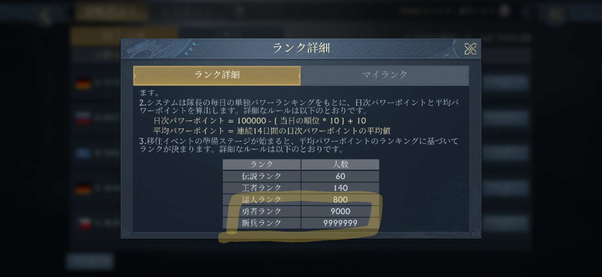
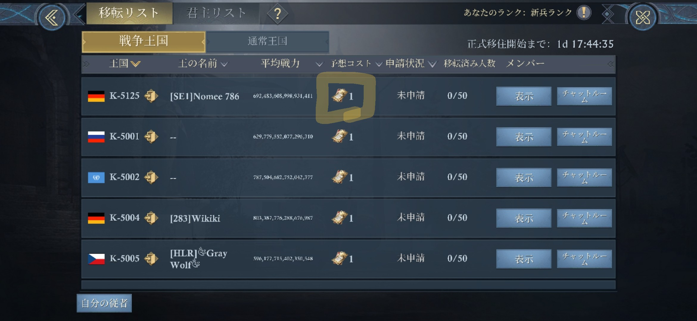
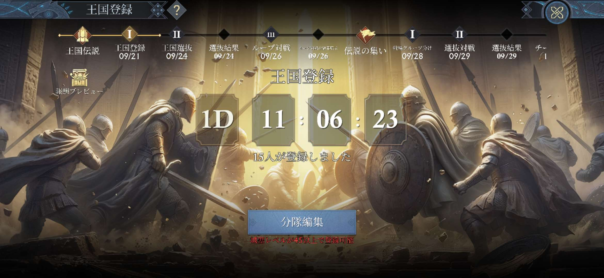
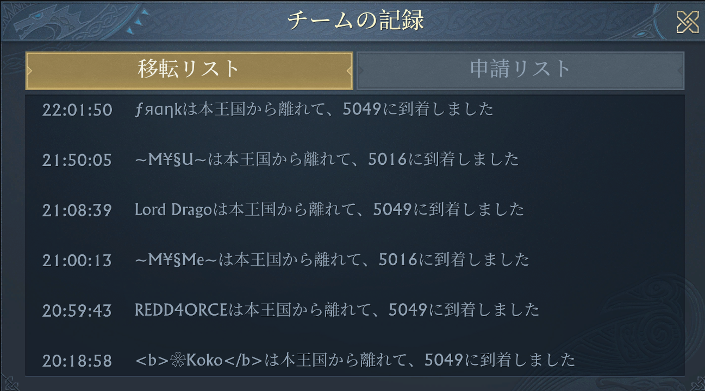
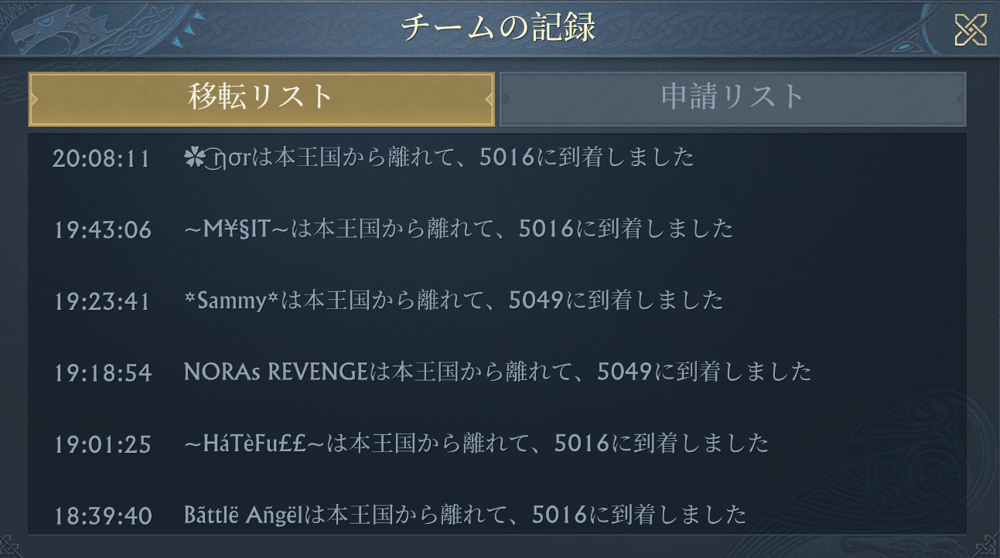
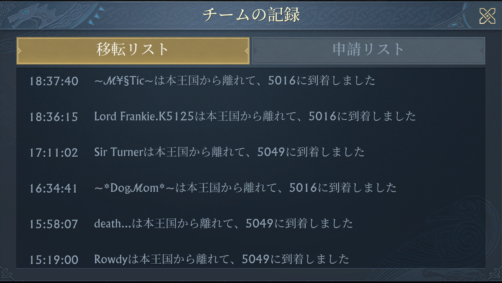
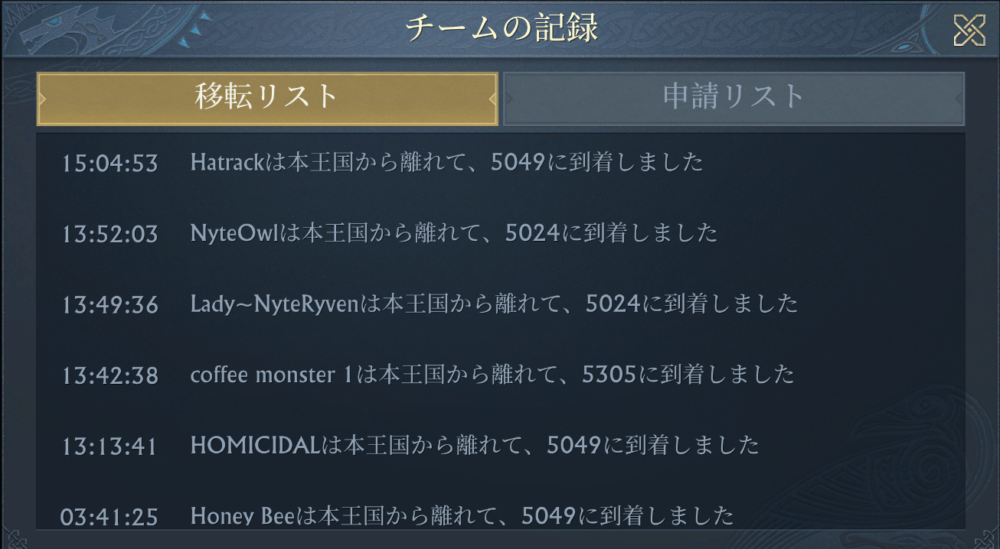
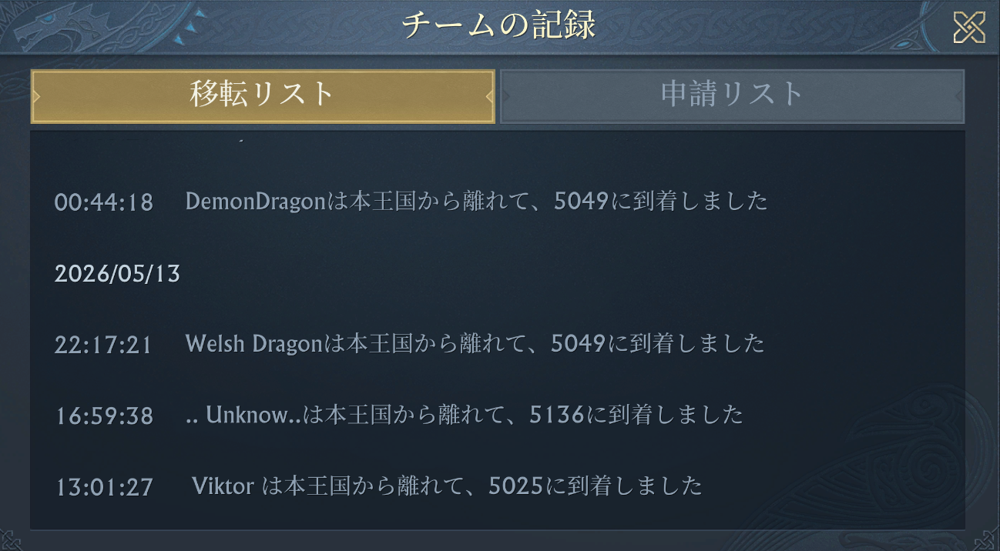

ONI — 日本語
RORON.k5125.ONI2026-11-26 23:11 JST
彼らから連絡がないんだ。
RORON.k5125.ONI2026-11-26 23:11 JST
あ、ライオンキングとALXAがどうしてるか知ってる？
RORON.k5125.ONI2026-11-26 23:10 JST
Do you know how leo king and ALXA
RORON.k5125.ONI2026-11-26 23:09 JST
良かった！😁
Роман2807902026-11-26 23:09 JST
Роман2807902026-11-26 23:09 JST
Роман2807902026-11-26 23:09 JST
返事を待っています
Роман2807902026-11-26 23:08 JST
もう購入して、招待を送りました
Роман2807902026-11-26 23:08 JST
私を受け入れてほしい
RORON.k5125.ONI2026-11-26 23:08 JST
あなたなら、1USDで5個買えます
RORON.k5125.ONI2026-11-26 23:03 JST
あなたが持っているのは7つの申請書だ。許可証は購入が必要だ。
RORON.k5125.ONI2026-11-26 23:03 JST
わたしも申請書は7つ。
RORON.k5125.ONI2026-11-26 23:02 JST
これは許可証がないことを示している。許可証と申請書は違うよ
Роман2807902026-11-26 23:02 JST
7個持ってる
RORON.k5125.ONI2026-11-26 23:01 JST
翻訳しました。許可証がないとエラーが出ています。
Роман2807902026-11-26 23:01 JST
1つ以外は全部チェックを入れてる
Роман2807902026-11-26 23:01 JST
移住を受け入れることができません
RORON.k5125.ONI2026-11-26 23:01 JST
1USDで買えます
RORON.k5125.ONI2026-11-26 23:00 JST
@ 許可証が必要です
RORON.k5125.ONI2026-11-26 22:59 JST
上から2番目に何が書いてある？
Роман2807902026-11-26 22:55 JST
何かうまくいっていないようです
Роман2807902026-11-26 22:54 JST
Роман2807902026-11-26 22:54 JST
Роман2807902026-11-26 22:54 JST
Роман2807902026-11-26 22:54 JST
試してみたけど、無理だった
knight1722 from smiの世界2026-11-26 22:05 JST
ろろんさーん 5047ONIに私を入れてくださーい
RORON.k5125.ONI2026-11-26 22:00 JST
@ Leo king は申請できたてしょうか？
RORON.k5125.ONI2026-11-26 22:00 JST
@ 申請しましたか？
nana_k625 from smiの世界2026-11-26 19:53 JST
nana_k625 from smiの世界2026-11-26 19:52 JST
596:1206 on 5047.
This alliance will be new ONI territory.
This DRA alliance is given as new ONI. It's open now. So Please join DRA when you reach to 5047
This alliance will be new ONI territory.
This DRA alliance is given as new ONI. It's open now. So Please join DRA when you reach to 5047
nana_k625 from smiの世界2026-11-26 17:05 JST
申請したあとは5047の王様の承認を待ちます。
王様が承認したらイベント画面から移転完了の操作を行います。
それで移転は完了するはずです。
なお、私は申請を行った後、王様からの承認を待っているところです。
全てが完了したら、またここで報告します。
王様が承認したらイベント画面から移転完了の操作を行います。
それで移転は完了するはずです。
なお、私は申請を行った後、王様からの承認を待っているところです。
全てが完了したら、またここで報告します。
roron.k5125.oni from smiの世界2026-11-26 17:00 JST
ななが待っています
roron.k5125.oni from smiの世界2026-11-26 16:59 JST
飛んでください
Роман2807902026-11-26 16:39 JST
いつ跳ぶの？
Роман2807902026-11-26 16:39 JST
準備はすべてできています
Роман2807902026-11-26 16:38 JST
RORON.k5125.ONI2026-11-26 14:25 JST
何か問題があれば、roronにコンタクトしてください。
RORON.k5125.ONI2026-11-26 13:47 JST
@everyone
ななさんの移転プロセスが進行中です。まだ完全に移行は完了していませんが、正常と判断します。全員k5047への移転を開始してください。
ななさんの移転プロセスが進行中です。まだ完全に移行は完了していませんが、正常と判断します。全員k5047への移転を開始してください。
yuki27362026-11-26 10:58 JST
ろろんさんおはようございます。ロシア人は英語嫌いですね。😆 🤣 😂
RORON.k5125.ONI2026-11-26 10:52 JST
たぶん、英語が鬱陶しいんだと思う🤣
RORON.k5125.ONI2026-11-26 10:51 JST
彼女はわたしに返事してくれないんだ😅
RORON.k5125.ONI2026-11-26 10:51 JST
👍 いいね！ありがとう
Роман2807902026-11-26 10:50 JST
もう彼とはWhatsAppでやり取りしたので、Nanaがこれをするのを待って、それからВетерを待つ必要があります
RORON.k5125.ONI2026-11-26 10:47 JST
おはようございます🙂
ありがとうございます。
Leo kingはwarriorランクです。自力で移転する必要があります。彼が困ったらロシア語で助けてあげてね。わたしも英語でフォローします😁
ありがとうございます。
Leo kingはwarriorランクです。自力で移転する必要があります。彼が困ったらロシア語で助けてあげてね。わたしも英語でフォローします😁
Роман2807902026-11-26 10:40 JST
Leo kingも回収しないといけない？
Роман2807902026-11-26 10:39 JST
私は風からの返事を待っています
Роман2807902026-11-26 10:39 JST
全部理解しました
Роман2807902026-11-26 10:39 JST
おはようございます
RORON.k5125.ONI2026-11-26 09:01 JST
@ ななが移転を先に行います。成功したら、わたしが連絡しますので、その連絡を待ってから移転してください
roron_at_bedrock2026-11-26 01:30 JST
@ あなたはここでわたしと話ができる。画像を使ってわたしはあなたに仕組みを説明できるだろう。あなたはロシア語で彼らに説明をしてもらいたい。お願いします。誰も王国に残していきたくないのです。
roron_at_bedrock2026-11-26 01:28 JST
TapaCは新兵ランクかもしれない
roron_at_bedrock2026-11-26 01:23 JST
注意：従者になるアカウントは、ONIから脱退していなくてはなりません。従者になる新兵アカウントがONIから脱退、勇者アカウントが新兵アカウントを従者に登録、新兵アカウントは従者登録を承認、です。
roron_at_bedrock2026-11-26 01:01 JST
Betep、Lion king、TapaCのサポートをお願いできますか？
roron_at_bedrock2026-11-26 01:00 JST
TapaCも一緒に行きます。
roron_at_bedrock2026-11-26 01:00 JST
Шахты 2407はわたしが連れて行きます。
roron_at_bedrock2026-11-26 01:00 JST
その他のアカウントは新兵ランクのはずです。
roron_at_bedrock2026-11-26 00:59 JST
@ 勇者ランクはあなたと、Betepと、Lion kingです。
roron_at_bedrock2026-11-26 00:41 JST
日本語では勇者ランク、英語ではウォーリアーランクです。
日本語では新兵ランク、英語ではリクルートランクです。
日本語では新兵ランク、英語ではリクルートランクです。
RORON.k5125.ONI2026-11-26 00:21 JST
従者になるための重要なボタン
RORON.k5125.ONI2026-11-25 12:35 JST
k5047に移住することで、相手先とも調整しています。
しかし、ここにきて、移住を中止する選択も出てきました。
sh60の勇者ランク(warrior)はチケットを購入して、新兵ランク10個まで帯同して移住可能。
sh55以下の新兵ランク(recruit)は従者として無料で移住可能。
しかし、sh60の新兵ランクについてはルールに記載がありません。もし、移住不可能の場合には移住を中止します。
しかし、ここにきて、移住を中止する選択も出てきました。
sh60の勇者ランク(warrior)はチケットを購入して、新兵ランク10個まで帯同して移住可能。
sh55以下の新兵ランク(recruit)は従者として無料で移住可能。
しかし、sh60の新兵ランクについてはルールに記載がありません。もし、移住不可能の場合には移住を中止します。
Роман2807902026-11-25 11:43 JST
👍
roron_at_bedrock2026-11-25 06:11 JST
明日11/25から移住開始します。詳細はまたアナウンスします。
RORON.k5125.ONI2026-11-24 20:39 JST
まだです。正式の移住はまだ始まってません。チケットも買えませんし。
aaaa02904 from smiの世界2026-11-24 20:07 JST
ﾏﾀﾞﾀﾞﾖ(*´∀｀)
Роман2807902026-11-24 20:05 JST
もう引っ越し始めてるの？
Роман2807902026-11-24 20:04 JST
こんにちは
roron_at_bedrock2026-11-24 17:28 JST
チケットは1枚1USDと想定しています。勇者ランクの方は課金が必要になります。課金が難しい方はroronにご相談ください。
roron_at_bedrock2026-11-24 17:21 JST
ONI の課金者はたぶん勇者ランクです。ご自身のランクを確認してください。勇者ランクは新兵ランクを10にんまで無料で連れていけます。無課金者はほとんどが新兵ランクと思われます。


roron_at_bedrock2026-11-23 12:02 JST
再投稿：
ONIは別の王国へ移住することを決定しました。具体的な移住先はまだ交渉中ですが、最終決定はNana-sanと私に任せていただくようお願いします。移住先の候補は、前回のFAEで私たちの側だったk5227、今回のFAEで私たちの側であるk5047、そして同盟DDがあるk5049です。
第一候補はk5047です。ONIと一緒に移住しますか、それともk5125に残る予定ですか？あるいは、別の王国へ移る予定ですか？移住イベントは24日に始まるので、このメッセージを読んだらできるだけ早く返答してください
ONIは別の王国へ移住することを決定しました。具体的な移住先はまだ交渉中ですが、最終決定はNana-sanと私に任せていただくようお願いします。移住先の候補は、前回のFAEで私たちの側だったk5227、今回のFAEで私たちの側であるk5047、そして同盟DDがあるk5049です。
第一候補はk5047です。ONIと一緒に移住しますか、それともk5125に残る予定ですか？あるいは、別の王国へ移る予定ですか？移住イベントは24日に始まるので、このメッセージを読んだらできるだけ早く返答してください
roron_at_bedrock2026-11-23 11:21 JST
ONIは別の王国へ移住することを決定しました。具体的な移住先はまだ交渉中ですが、最終決定はNana-sanと私にお任せください。移住先の候補は、前回のFAEで私たちの側だったk5227、今回のFAEで私たちの側であるk5047、そして同盟DDがあるk5049です。
第一候補はk5047です。ONIと一緒に移住しますか、それともk5125に残る予定ですか？あるいは、別の王国へ移る予定ですか？移住イベントは24日に始まるため、このメッセージを読んだらできるだけ早く返答してください
第一候補はk5047です。ONIと一緒に移住しますか、それともk5125に残る予定ですか？あるいは、別の王国へ移る予定ですか？移住イベントは24日に始まるため、このメッセージを読んだらできるだけ早く返答してください
roron_at_bedrock2026-11-22 17:14 JST
レベル5の攻城戦が始まります
Роман2807902026-11-22 11:43 JST
情報ありがとう 👍
roron_at_bedrock2026-11-22 10:41 JST
TreeはUTC0300、1時間半後です。これはこのFAEで最後のTreeイベントです。ぜひ参加してください
roron_at_bedrock from smiの世界2026-11-17 20:57 JST
ポータルとツリーとクラーケンやるよ
roron_at_bedrock from smiの世界2026-11-16 19:44 JST
UTC1200に攻城戦やります。
roron_at_bedrock from smiの世界2026-11-15 21:31 JST
ポータルやるよ～
roron_at_bedrock from smiの世界2026-11-15 18:57 JST
ポイント攻城戦がはじまります
RORON.k5125.ONI2026-11-14 20:17 JST
ローマン、4つのチャットはすべて自動翻訳で同じ内容が異なる言語で書かれているんだよ。日本語、英語、ロシア語、スペイン語。
roron_at_bedrock2026-11-14 19:17 JST
@ なぜfree-chat-ruを見ないの？free-chat-ruが見れないのか、それとも、翻訳品質が悪いのか。
roron_at_bedrock from smiの世界2026-11-14 16:55 JST
城攻めするよ
roron_at_bedrock from smiの世界2026-11-14 14:12 JST
港攻めるよ
roron_at_bedrock2026-11-14 11:00 JST
KvKはUTC1200です。ホストは現在不明です—SE1かもしれません？そして、TreeはUTC1240です。Treeに参加する場合は、まずONIでTreeポイントを獲得してから、ONIを離れてKvKホストに合流してください。今日のTreeイベントには参加しないかもしれません。状況によっては、そのままKvKに向かう可能性もあります
RORON.k5125.ONI2026-11-13 21:26 JST
ポータルの時間
RORON.k5125.ONI2026-11-13 21:16 JST
UTC1300の包囲戦
roron_at_bedrock2026-11-13 16:43 JST
UTC10:00/JST19:00にSiegeレベル7
roron_at_bedrock from smiの世界2026-11-12 19:17 JST
港攻めはじまりました～ 全員集合！
roron_at_bedrock2026-11-12 11:58 JST
クールダウン後、UTC 12:50にツリー。ただし、包囲戦の状況次第です。同盟チャットとギルドチャットを確認してください。
roron.k5125.oni from smiの世界2026-11-11 21:30 JST
ポータルやるよー
roron_at_bedrock2026-11-11 19:25 JST
剣を差しました。1時間後に敵の城を攻めます。
roron_at_bedrock2026-11-11 16:15 JST
45分後に敵の港を攻撃する
RORON.k5125.ONI2026-11-10 21:40 JST
旧跡やります
RORON.k5125.ONI2026-11-10 20:56 JST
木のイベントは攻城戦が終わったらやります。
roron.k5125.oni from smiの世界2026-11-10 20:43 JST
ななさん、ここには英語じゃやなくて日本語書かないと、うまくロシア語に変換されないかも
roron.k5125.oni from smiの世界2026-11-10 20:43 JST
攻城戦
RORON.k5125.ONI2026-11-10 20:42 JST
siege
nana_k625 from smiの世界2026-11-10 11:32 JST
Someone starting Kraken.
Please hit Kraken if yiu can be online
Please hit Kraken if yiu can be online
RORON.k5125.ONI2026-11-09 21:37 JST
ポータル、今
RORON.k5125.ONI2026-11-08 19:16 JST
UTC1200に、Brave Winの開始と同時にTreeが起動します。皆さん、両方のイベントを楽しんでください
roron.k5125.oni from smiの世界2026-11-07 22:00 JST
ポータルやります
RORON.k5125.ONI2026-11-07 20:28 JST
UTC1230にポータル、1時間後
roron_at_bedrock2026-11-06 20:59 JST
木
roron_at_bedrock2026-11-06 19:52 JST
@ free-chat-jp — японский.
free-chat-en — английский.
free-chat-ru — русский.
free-chat-es — испанский.
Ваш язык — русский. Вы всегда можете видеть все чаты на free-chat-ru. Сообщения, которые вы пишете на free-chat-ru, автоматически переводятся на другие языки в режиме реального времени. Сообщения, которые вы публикуете в других чатах, также автоматически переводятся на free-chat-ru в режиме реального времени. Если вы публикуете сообщение на русском языке на free-chat-jp, оно не будет переведено на японский. Пожалуйста, публикуйте сообщения на русском языке на free-chat-ru. Вы можете видеть все чаты других пользователей на free-chat-ru. Вам не нужно просматривать другие чаты.
free-chat-en — английский.
free-chat-ru — русский.
free-chat-es — испанский.
Ваш язык — русский. Вы всегда можете видеть все чаты на free-chat-ru. Сообщения, которые вы пишете на free-chat-ru, автоматически переводятся на другие языки в режиме реального времени. Сообщения, которые вы публикуете в других чатах, также автоматически переводятся на free-chat-ru в режиме реального времени. Если вы публикуете сообщение на русском языке на free-chat-jp, оно не будет переведено на японский. Пожалуйста, публикуйте сообщения на русском языке на free-chat-ru. Вы можете видеть все чаты других пользователей на free-chat-ru. Вам не нужно просматривать другие чаты.
Роман2807902026-11-06 11:29 JST
Идёт захват порт 5
Роман2807902026-11-06 11:28 JST
Привет
RORON.k5125.ONI2026-11-01 21:02 JST
ポータル
roron_at_bedrock from smiの世界2026-11-01 17:16 JST
攻城戦
RORON.k5125.ONI2026-11-01 09:27 JST
UTC1200のポータルとツリー
roron_at_bedrock from smiの世界2026-10-31 16:17 JST
港攻めを開始
roron.k5125.oni from smiの世界2026-10-30 21:30 JST
ポータル
Nana(GG7)K6252026-10-30 15:17 JST
大規模なポート1は55分後に始まります。みんな、戦闘の準備をしてください
nana_k625 from smiの世界2026-10-30 15:16 JST
Major port1 will start in 55mins. everyone please get ready for the battle
RORON.k5125.ONI2026-10-30 12:20 JST
ボーナスクエスト
mokichin from smiの世界2026-10-30 10:54 JST
宝箱
nana_k625 from smiの世界2026-10-29 21:23 JST
Tree will start in 10 mins
mokichin from smiの世界2026-10-29 21:19 JST
宝箱
nana_k625 from smiの世界2026-10-29 21:10 JST
港終わったら旧跡やりましょう
nana_k625 from smiの世界2026-10-29 21:10 JST
Let's start Tree after finishing Port
mokichin from smiの世界2026-10-29 21:07 JST
港、始まっとる😆
mokichin from smiの世界2026-10-29 17:49 JST
宝箱
RORON.k5125.ONI2026-10-29 06:26 JST
今週火曜日の「Tree」アクティビティのことをすっかり忘れていました。なので、今日の木曜日、12:00 UTCから開催します。ぜひ参加してください！
RORON.k5125.ONI2026-10-28 21:26 JST
ポータルの時間
RORON.k5125.ONI2026-10-28 21:26 JST
ポータルやるよー
RORON.k5125.ONI2026-10-28 21:04 JST
1時間後に港を攻撃
roron_at_bedrock from smiの世界2026-10-28 18:10 JST
クラーケンは明日だ
roron_at_bedrock2026-10-28 16:46 JST
PortalはUTC1230、KrakenはUTC1400です。今日はスクランブルの日なので敵の港を攻撃しますが、何時になるかは分かりません。ギルドチャットをよく確認してください。
roron.k5125.oni from smiの世界2026-10-27 21:19 JST
攻城戦やってるよ
RORON.k5125.ONI2026-10-27 12:16 JST
ロシア語を使うなら、free-chat-ruにロシア語を書き込むと、自動で翻訳されます。
RORON.k5125.ONI2026-10-27 12:15 JST
あ、誰かが起動しちゃったのね
Роман2807902026-10-27 09:55 JST
Начали щюпальци или кальмар
roron.k5125.oni from smiの世界2026-10-26 21:28 JST
ポータル
roron_at_bedrock from smiの世界2026-10-26 15:51 JST
宝箱～、そして次の城攻め開始！
roron_at_bedrock from smiの世界2026-10-26 14:02 JST
港攻めはじまりました
roron_at_bedrock from smiの世界2026-10-25 19:31 JST
1時間半後、ブレイブウィン
roron_at_bedrock from smiの世界2026-10-25 19:31 JST
攻城戦
roron.k5125.oni from smiの世界2026-10-25 10:41 JST
宝箱、lv3攻城戦開始
RORON.k5125.ONI2026-10-24 21:26 JST
ポータルやるよ
nana_k625 from smiの世界2026-10-24 18:59 JST
Starting Port capture
roron.k5125.oni from smiの世界2026-10-24 13:38 JST
宝箱ふたつ
roron.k5125.oni from smiの世界2026-10-24 12:22 JST
攻城戦ふたつ
roron.k5125.oni from smiの世界2026-10-24 11:32 JST
宝箱でた、港はじまった
roron.k5125.oni from smiの世界2026-10-23 23:14 JST
6分後旧跡やります
roron.k5125.oni from smiの世界2026-10-23 22:48 JST
10分後クラーケン、そのあと旧跡します
roron_at_bedrock2026-10-23 16:48 JST
UTC1300にTree、今日はUTC1400にKraken
RORON.k5125.ONI2026-10-23 15:39 JST
10分後にポートする
RORON.k5125.ONI2026-10-22 21:41 JST
ポータル
nana_k625 from smiの世界2026-10-22 14:25 JST
Port2 Just started!
roron_at_bedrock2026-10-21 17:40 JST
もう一度試してみる
roron_at_bedrock2026-10-21 17:40 JST
もう一度試す
roron_at_bedrock from smiの世界2026-10-21 17:39 JST
もう一度テスト
roron_at_bedrock from smiの世界2026-10-21 14:25 JST
宝箱
roron_at_bedrock2026-10-21 11:10 JST
やりましょ～
Роман2807902026-10-21 11:10 JST
時間がある人はみんな入ってきて
roron_at_bedrock2026-10-21 11:10 JST
わお！オッケー
Роман2807902026-10-21 11:10 JST
誤ってイカを始めた
Роман2807902026-10-21 11:09 JST
みなさん、こんにちは
roron_at_bedrock from smiの世界2026-10-20 21:29 JST
ポータルの時間、旧跡もやるよ
roron_at_bedrock2026-10-20 20:23 JST
テスト
roron_at_bedrock2026-10-20 20:23 JST
テスト、テスト、最終テスト。
roron.k5125.oni from ONI Global2026-10-20 20:16 JST
@
Connections Bot2026-10-20 20:16 JST
Connections Bot2026-10-20 20:11 JST
roron_at_bedrock2026-10-20 19:45 JST
テスト
nana_k625 from smiの世界2026-10-20 19:45 JST
👍
roron_at_bedrock from ONI Global2026-10-20 19:44 JST
スペイン語のチャンネルも作ってみた
roron_at_bedrock from ONI Global2026-10-20 19:43 JST
テスト
roron_at_bedrock from ONI Global2026-10-20 15:49 JST
starting lv3 capturing
roron.k5125.oni from ONI Global2026-10-19 22:14 JST
宝箱〜
roron.k5125.oni from ONI Global2026-10-19 21:01 JST
siege time
roron_at_bedrock2026-10-18 21:32 JST
ポータルタイム
roron_at_bedrock from ONI Global2026-10-15 20:12 JST
Nether battle is started in 15 minuites
roron.k5125.oni from ONI Global2026-10-14 21:29 JST
portal time,
roron.k5125.oni from ONI Global2026-10-12 21:33 JST
portal time
roron_at_bedrock from ONI Global2026-10-11 19:23 JST
Brave win will be on UTC1200 today,,,, today
roron_at_bedrock from ONI Global2026-10-07 09:34 JST
roronのClaudeからの情報提供です。
【装備セット切り替えの仕様変更（9/23〜24の更新以降）】
更新案内には書かれていませんが、装備セットの仕様が変わっています（公式Discordでも同じ報告が多数）。
・枠1は戦闘装備専用、枠2は経済装備専用になりました
・2つのセットは切り替えるものではなくなり、両方の効果が同時にかかります
・宝石も同様です（経済用の緑の宝石は経済装備側、ステータス用の宝石は戦闘装備側）
・訓練・病院・行軍速度向けの装備（Warmonger、Warrior Set IIなど）は戦闘装備扱いのため、枠2には入れられません
・戦闘用の構成を2通り登録して切り替えることはできなくなりました。必要なときは手作業で付け替えてください
【装備セット切り替えの仕様変更（9/23〜24の更新以降）】
更新案内には書かれていませんが、装備セットの仕様が変わっています（公式Discordでも同じ報告が多数）。
・枠1は戦闘装備専用、枠2は経済装備専用になりました
・2つのセットは切り替えるものではなくなり、両方の効果が同時にかかります
・宝石も同様です（経済用の緑の宝石は経済装備側、ステータス用の宝石は戦闘装備側）
・訓練・病院・行軍速度向けの装備（Warmonger、Warrior Set IIなど）は戦闘装備扱いのため、枠2には入れられません
・戦闘用の構成を2通り登録して切り替えることはできなくなりました。必要なときは手作業で付け替えてください
roron_at_bedrock from ONI Global2026-10-06 21:29 JST
Portal time
roron_at_bedrock from ONI Global2026-10-06 10:45 JST
Alliance raid will be started on UTC0400 in 2hours 20minuites. Be careful, do not forget the shielding for your stronghold if you do not want to be attacked by enemies.
roron.k5125.oni from ONI Global2026-10-04 21:34 JST
portal time
roron.k5125.oni from ONI Global2026-10-02 21:45 JST
portal is doing 8min left
roron.k5125.oni from ONI Global2026-10-01 23:06 JST
Burning tournament will start in 9 minutes
roron_at_bedrock from ONI Global2026-10-01 11:56 JST
Burning tournament will be on UTC1400 today
roron.k5125.oni from ONI Global2026-09-30 21:30 JST
portal time
roron.k5125.oni from ONI Global2026-09-28 21:36 JST
portal time
roron.k5125.oni from ONI Global2026-09-25 21:28 JST
portal time
Роман2807902026-09-24 23:04 JST
時間のある方はどなたでもご参加ください
Роман2807902026-09-24 23:04 JST
バーニングトーナメント 13 分
Роман2807902026-09-24 23:03 JST
こんにちは皆さん
roron_at_bedrock from ONI Global2026-09-24 09:11 JST
Fallen knight around UTC0300, Burning tournament around UTC1400 today#010
roron.k5125.oni from ONI Global2026-09-23 21:29 JST
portal time
roron.k5125.oni from ONI Global2026-09-22 21:55 JST
check the Supreme Avalon registration

roron.k5125.oni from ONI Global2026-09-21 21:30 JST
portal time
RORON.k5125.ONI2026-09-19 20:29 JST
ポータルタイム
roron_at_bedrock from ONI Global2026-09-19 09:24 JST
Portal on UTC1130 before kvk, and kvk will be started on UTC1200 today
roron.k5125.oni from ONI Global2026-09-18 07:18 JST
ごめん、寝てました😅
Роман2807902026-09-17 23:21 JST
球体が始まった
Роман2807902026-09-17 23:21 JST
こんにちは皆さん
Роман2807902026-09-17 23:21 JST
時間ある者は戦いに行こう
Роман2807902026-09-17 23:20 JST
バーニングトーナメント
roron.k5125.oni from ONI Global2026-09-17 21:28 JST
portal time🙂
nana_k625 from smiの世界2026-09-15 21:38 JST
Portal time~
nana_k625 from smiの世界2026-09-15 00:25 JST
Slow capture on 1560:1554 and 1460:1654 at 1545UTC
nana_k625 from smiの世界2026-09-14 23:28 JST
Slow capture on 2 grids after current running one.
roron.k5125.oni from ONI Global2026-09-14 19:15 JST
Tree on UTC1230 today
nana_k625 from smiの世界2026-09-14 08:23 JST
Slow capture 2330UTC
nana_k625 from smiの世界2026-09-13 21:49 JST
Portal time~
roron.k5125.oni from ONI Global2026-09-11 21:28 JST
it's a portal time
roron_at_bedrock from ONI Global2026-09-11 10:39 JST
Slow capture will be on UTC0200 and UTC1400, Potal and Tree on UTC 1230 today. Please join it.
nana_k625 from smiの世界2026-09-10 22:30 JST
Burning tournament at 1400UTC
nana_k625 from smiの世界2026-09-10 11:31 JST
Starting slow capture〜
nana_k625 from smiの世界2026-09-10 08:16 JST
Starting slow capture
roron.k5125.oni from ONI Global2026-09-09 21:34 JST
ポータルやるよー
roron_at_bedrock from ONI Global2026-09-08 21:32 JST
Tree event!!!! and slow capture
roron_at_bedrock from ONI Global2026-09-08 09:40 JST
Fallen knight around UTC0300, Tree on UTC1200, Slow capture/TBD
roron.k5125.oni from ONI Global2026-09-06 22:33 JST
start a slow capture
nana_k625 from smiの世界2026-09-05 20:05 JST
Let's start Portal~
nana_k625 from smiの世界2026-09-05 06:25 JST
【Siege notification】
We will start capturing on Blue's lv7
Please join!
We will start capturing on Blue's lv7
Please join!
nana_k625 from smiの世界2026-09-03 22:15 JST
Tree Summoning is starting.
nana_k625 from smiの世界2026-09-03 15:23 JST
【Today's schedule】
1) Tree Summoning 1315UTC on lv7
2) Burning tournament 1400 UTC
1) Tree Summoning 1315UTC on lv7
2) Burning tournament 1400 UTC
nana_k625 from smiの世界2026-09-02 21:38 JST
Portal time~
roron.k5125.oni from ONI Global2026-09-01 21:19 JST
it's the tree event day
roron.k5125.oni from ONI Global2026-08-31 23:14 JST
次の攻城戦はじめます
nana_k625 from smiの世界2026-08-31 22:10 JST
Starting capture. Please join!
nana_k625 from smiの世界2026-08-31 21:51 JST
Let's start Portal~
nana_k625 from smiの世界2026-08-31 09:19 JST
Siege is starting. Please join!
roron_at_bedrock from ONI Global2026-08-30 20:59 JST
Brave win is starting
roron.k5125.oni from smiの世界2026-08-30 07:29 JST
slow capture on UTC2245, please join you can
roron.k5125.oni from ONI Global2026-08-29 21:01 JST
Siege will be on UTC1300 today, please join
nana_k625 from smiの世界2026-08-29 05:40 JST
Slow capture in 5 mins
nana_k625 from smiの世界2026-08-28 21:04 JST
Portal time〜
nana_k625 from smiの世界2026-08-26 08:28 JST
New area including lv6s open after the reset.
We will take them right after the rest. It's needed to hurry.
Please join and do daily as fast as possible when you come online
We will take them right after the rest. It's needed to hurry.
Please join and do daily as fast as possible when you come online
nana_k625 from smiの世界2026-08-25 21:00 JST
Let's start Tree
nana_k625 from smiの世界2026-08-25 10:39 JST
【Today's schedule】
1) Fallen Knights around 0300UTC
2) Tree 1200UTC
3) Siege 1300UTC (maybe)
1) Fallen Knights around 0300UTC
2) Tree 1200UTC
3) Siege 1300UTC (maybe)
nana_k625 from smiの世界2026-08-25 09:15 JST
攻城始まります ギルチャをチェックしてご参加ください(*`･ω･)ゞ
nana_k625 from smiの世界2026-08-24 21:42 JST
Let's start Portal
nana_k625 from smiの世界2026-08-23 23:08 JST
Slow capture is just starting.
Please join!
Please join!
roron.k5125.oni from ONI Global2026-08-23 10:24 JST
攻城戦やるよー
roron.k5125.oni from ONI Global2026-08-23 00:11 JST
攻城戦はじめました～
nana_k625 from smiの世界2026-08-22 19:11 JST
PLet's start Portal
roron_at_bedrock2026-08-22 16:47 JST
UTC1000/JST1900のポータル、
本日HGHでUTC1200/JST2100にkvk
本日HGHでUTC1200/JST2100にkvk
nana_k625 from smiの世界2026-08-20 21:03 JST
Portal time~
nana_k625 from smiの世界2026-08-20 12:50 JST
Chest~
nana_k625 from smiの世界2026-08-20 11:44 JST
Slow capture after finishing this capture. Maybe 0400UTC
nana_k625 from smiの世界2026-08-20 09:44 JST
【Today's schedule】
1) Castle capture around 0100UTC
※ see guild chat or coalition chat for details
2)Portal & Tree 1200UTC
3) Burning tourney 1400UTC
1) Castle capture around 0100UTC
※ see guild chat or coalition chat for details
2)Portal & Tree 1200UTC
3) Burning tourney 1400UTC
roron.k5125.oni from ONI Global2026-08-19 17:24 JST
次の攻城戦はUTC1300です
nana_k625 from smiの世界2026-08-18 21:08 JST
Portal time~
nana_k625 from smiの世界2026-08-18 07:45 JST
[Today's Schedule]
1) Castle Siege: After reset
2) Portal & Tree Summoning: 1200 UTC
* Castle Siege generally takes place:
after the reset / around 1300UTC / around 2200UTC
Please check guild chat or guild marks for details.
1) Castle Siege: After reset
2) Portal & Tree Summoning: 1200 UTC
* Castle Siege generally takes place:
after the reset / around 1300UTC / around 2200UTC
Please check guild chat or guild marks for details.
nana_k625 from smiの世界2026-08-17 08:53 JST
【Today's schedule】
It's scramble day today.
It wii be fight on Schorchwind right after the reset.
Please come and join!
After this, please check guild check for detail.
It's scramble day today.
It wii be fight on Schorchwind right after the reset.
Please come and join!
After this, please check guild check for detail.
nana_k625 from smiの世界2026-08-16 21:46 JST
Portal time～
nana_k625 from smiの世界2026-08-16 13:23 JST
【Today's schedule】
1) Portal 1230 UTC
2) Castle siege 1300UTC
1) Portal 1230 UTC
2) Castle siege 1300UTC
nana_k625 from smiの世界2026-08-15 10:19 JST
Capture is starting soon. Come n join!
nana_k625 from smiの世界2026-08-15 07:21 JST
【Siege notification】
Starting siege before rest.
Please come online and join if possible
Starting siege before rest.
Please come online and join if possible
nana_k625 from smiの世界2026-08-14 21:09 JST
Portal ans Tree time－
nana_k625 from smiの世界2026-08-14 15:48 JST
【Today's schedule】
1) Portal & Tree summoning 1200UTC
2) Castle siege 1300 UTC
1) Portal & Tree summoning 1200UTC
2) Castle siege 1300 UTC
nana_k625 from smiの世界2026-08-14 10:09 JST
Capture is starting now
Please join!
Please join!
nana_k625 from smiの世界2026-08-13 14:42 JST
【notification】
We are taking gates now.
Please send 1 troop to each gates when you come online
We are taking gates now.
Please send 1 troop to each gates when you come online
nana_k625 from smiの世界2026-08-13 13:09 JST
最後のグリッド取りに行きます ぜひご参加ください
nana_k625 from smiの世界2026-08-13 10:37 JST
【攻城のお知らせ】
攻城始まりました〜
あと2グリッドでゲートなのでこの後は随時になります
inした方からご参加よろしくお願いします
攻城始まりました〜
あと2グリッドでゲートなのでこの後は随時になります
inした方からご参加よろしくお願いします
nana_k625 from smiの世界2026-08-12 23:25 JST
Slow capture has started
please join
please join
nana_k625 from smiの世界2026-08-12 21:39 JST
Let's start Portal~
nana_k625 from smiの世界2026-08-12 12:44 JST
【Today's event schedule after this】
1) Portal 12:30 UTC
2) Siege 14:00 UTC
※ Please check guild chat about siege details
1) Portal 12:30 UTC
2) Siege 14:00 UTC
※ Please check guild chat about siege details
nana_k625 from smiの世界2026-08-12 11:12 JST
【Siege notification】
Slow capture is just starting. Please come on line and join!
Slow capture is just starting. Please come on line and join!
nana_k625 from smiの世界2026-08-11 21:06 JST
Tree summoning will start in 8mins. Please join!
nana_k625 from smiの世界2026-08-11 13:36 JST
【Today's event schedule】
1) Tree summoning around 1200UTC
2) Castle siege Not decided yet. Please check the Guild chat.
1) Tree summoning around 1200UTC
2) Castle siege Not decided yet. Please check the Guild chat.
nana_k625 from smiの世界2026-08-11 10:55 JST
Our guild partner THC will start capture on lv3 soon. Please check guild chat
nana_k625 from smiの世界2026-08-10 21:33 JST
Castle capture is starting
nana_k625 from smiの世界2026-08-10 21:07 JST
Let's start Portal and then slow capture
nana_k625 from smiの世界2026-08-08 19:17 JST
Sorry, still under the coolingdown time. It will be started around 10:30 UTC
nana_k625 from smiの世界2026-08-08 19:07 JST
Portal~
nana_k625 from smiの世界2026-08-08 09:21 JST
【Today's event schedule】
1) Portal 10:00 UTC
2) KVK 12:00 UTC at HGH
※ We got peace agreement with both k5322 and k5326
1) Portal 10:00 UTC
2) KVK 12:00 UTC at HGH
※ We got peace agreement with both k5322 and k5326
roron.k5125.oni from ONI Global2026-08-06 21:30 JST
ポータルやるよー
roron.k5125.oni from ONI Global2026-08-02 21:37 JST
ポータルやるよー
nana_k625 from smiの世界2026-07-31 21:34 JST
Portal time~
nana_k625 from smiの世界2026-07-30 23:08 JST
Burning tourney is starting.
nana_k625 from smiの世界2026-07-30 21:33 JST
Burning tourney will be at 1400UTC today.
Please join!
Please join!
roron_at_bedrock from ONI Global2026-07-29 21:32 JST
ポータルやりましょー
nana_k625 from smiの世界2026-07-25 19:37 JST
Starting Portal~
roron.k5125.oni from ONI Global2026-07-23 21:30 JST
ポータルやりますよー
nana_k625 from smiの世界2026-07-23 09:39 JST
【Today's event】
1) Portal 1230UTC
※ Please donate dusts to Portal
1) Portal 1230UTC
※ Please donate dusts to Portal
nana_k625 from smiの世界2026-07-21 21:33 JST
Let's start Portal
nana_k625 from smiの世界2026-07-20 21:47 JST
Tree summoning has started. Please join!
nana_k625 from smiの世界2026-07-20 21:34 JST
Tree will start in 10mins
nana_k625 from smiの世界2026-07-20 10:21 JST
【Today's event】
1) Tree summoning 1230UTC
This will be the last Tree this season. Please join!
1) Tree summoning 1230UTC
This will be the last Tree this season. Please join!
nana_k625 from smiの世界2026-07-19 21:48 JST
It's Portal time～
nana_k625 from smiの世界2026-07-19 13:13 JST
【Today's event】
1) Portal ... 1230UTC
2) capture ... not sure yet. please check guild chat.
1) Portal ... 1230UTC
2) capture ... not sure yet. please check guild chat.
roron.k5125.oni from ONI Global2026-07-17 21:53 JST
ポータルと旧跡やりますよー
nana_k625 from smiの世界2026-07-17 21:35 JST
Tree and Portal around 13:00 UTC
Please join!
Please join!
roron.k5125.oni from ONI Global2026-07-16 23:13 JST
メルトだよー
roron.k5125.oni from ONI Global2026-07-15 22:01 JST
ポータルやりますよー
nana_k625 from smiの世界2026-07-14 13:41 JST
【Today's schedule】
1) Castle siege Please check the Guild chat n Guild mark about starting time
2) Tree summoning 1230UTC
1) Castle siege Please check the Guild chat n Guild mark about starting time
2) Tree summoning 1230UTC
roron.k5125.oni from ONI Global2026-07-13 21:52 JST
ポータルやるよー
nana_k625 from smiの世界2026-07-11 13:23 JST
【Today's schedule】
1) Castle siege Please check the Guild chat n Guild mark about starting time
2) Portal and Tree summoning 10:00UTC
3) KvK 12:00UTC at Se1
1) Castle siege Please check the Guild chat n Guild mark about starting time
2) Portal and Tree summoning 10:00UTC
3) KvK 12:00UTC at Se1
nana_k625 from smiの世界2026-07-10 12:02 JST
【Today's schedule】
1) Castle siege Please check the Guild chat n Guild mark about starting time
2) Tree summoning 1230UTC
1) Castle siege Please check the Guild chat n Guild mark about starting time
2) Tree summoning 1230UTC
roron.k5125.oni from ONI Global2026-07-09 21:35 JST
ポータルやるよーん
roron.k5125.oni from ONI Global2026-07-07 21:26 JST
ポータルやるよ
roron.k5125.oni from ONI Global2026-07-05 21:29 JST
ポータルやるよ
roron.k5125.oni from ONI Global2026-07-03 21:30 JST
ぽーたるやるよ～
nana_k625 from smiの世界2026-07-03 17:48 JST
Chest~~~
nana_k625 from smiの世界2026-07-03 10:39 JST
【Today's schedule】
1) castle siege 0740 UTC
2) Portal and Tree 1230 UTC
※Schedule can be changed. Please check AC and GC oftenly when you come online
1) castle siege 0740 UTC
2) Portal and Tree 1230 UTC
※Schedule can be changed. Please check AC and GC oftenly when you come online
roron.k5125.oni from ONI Global2026-07-01 20:56 JST
Portal on UTC1230 in 30min, please join it
nana_k625 from smiの世界2026-06-30 21:53 JST
【Urgent】
Sorry for late announce.
We will start Tree summoning after Port capture.
Maybe it will start in 30mins.
Please join!
Sorry for late announce.
We will start Tree summoning after Port capture.
Maybe it will start in 30mins.
Please join!
nana_k625 from smiの世界2026-06-26 21:28 JST
portal~
roron.k5125.oni from ONI Global2026-06-24 21:31 JST
ポータルやるよ
roron.k5125.oni from ONI Global2026-06-23 22:00 JST
旧跡だよ～
nana_k625 from smiの世界2026-06-23 16:03 JST
【Today's schedule】
1) castle capture x2 10UTC
2) Tree summoning 1230UTC
Please check the guild chat about capture.
1) castle capture x2 10UTC
2) Tree summoning 1230UTC
Please check the guild chat about capture.
nana_k625 from smiの世界2026-06-22 16:25 JST
chest〜
nana_k625 from smiの世界2026-06-22 12:54 JST
【Today's schedule】
Today is a scramble day. It will start 05:00UTC.
We will fight as coalition. So, please check guild chat for capture schedule.
And, as an alliance schedule, we will have Portal at 12:30UTC.
Today is a scramble day. It will start 05:00UTC.
We will fight as coalition. So, please check guild chat for capture schedule.
And, as an alliance schedule, we will have Portal at 12:30UTC.
roron.k5125.oni from ONI Global2026-06-21 16:28 JST
ギルドに合流する前に、攻城戦をやります。可能な方は参加してください。
roron.k5125.oni from ONI Global2026-06-20 21:37 JST
ポータルやるよ
roron.k5125.oni from ONI Global2026-06-20 14:24 JST
5分後、港やるよ
roron.k5125.oni from ONI Global2026-06-18 21:31 JST
ポータルやるよー
nana_k625 from smiの世界2026-06-17 19:20 JST
【Capture notification】
The next capture is scheduled for around 12:00 UTC.
However, the timing may shift depending on the situation,
so please check the guild chat for updates.
※ Since captures are guild events this season,
so please make sure to check the guild chat regularly.
The next capture is scheduled for around 12:00 UTC.
However, the timing may shift depending on the situation,
so please check the guild chat for updates.
※ Since captures are guild events this season,
so please make sure to check the guild chat regularly.
nana_k625 from smiの世界2026-06-16 21:35 JST
Portal is starting, after then Tree.
Please join!
Please join!
nana_k625 from smiの世界2026-06-15 14:15 JST
【Today's schedule】 castle capture on lv1 12:30 utc/ 2:30 jst
roron.k5125.oni from ONI Global2026-06-12 21:31 JST
ポータルやるよ
roron.k5125.oni from ONI Global2026-06-08 21:30 JST
ポータルやるよー
roron.k5125.oni from ONI Global2026-06-06 21:34 JST
ポータルやります
roron.k5125.oni from ONI Global2026-06-04 18:43 JST
Please be careful about the starting time of nether war today. My pm about it was wrong. UTC1100 is right.
roron.k5125.oni from ONI Global2026-06-04 18:42 JST
今日の異世界のイベントはUTC1100からです。私のゲーム内でのpmは間違えています。注意してください。
roron.k5125.oni from ONI Global2026-06-02 21:28 JST
ポータルやるよ
roron.k5125.oni from ONI Global2026-05-29 21:32 JST
ポータルやるよ
roron.k5125.oni from ONI Global2026-05-27 21:26 JST
ポータルやるよ
roron.k5125.oni from ONI Global2026-05-23 21:32 JST
Portal time😁
nana_k625 from smiの世界2026-05-21 21:26 JST
It's Portal time~~
nana_k625 from smiの世界2026-05-21 20:15 JST
Nether is starting.
nana_k625 from smiの世界2026-05-21 19:27 JST
【Today's event schedule】
Sorry for late announcement.
We have two event today as follows.
1) Nether war 11:05 utc
2) Portal after nether maybe around 12:30 utc
Sorry for late announcement.
We have two event today as follows.
1) Nether war 11:05 utc
2) Portal after nether maybe around 12:30 utc
nana_k625 from smiの世界2026-05-19 21:41 JST
Let's start Portal!
nana_k625 from smiの世界2026-05-17 21:32 JST
It's time to Portal~
nana_k625 from smiの世界2026-05-17 12:17 JST
【Today's schedule】
1) Portal 12:30 utc
2) lv4 Siege (448:1278) after Portal
1) Portal 12:30 utc
2) lv4 Siege (448:1278) after Portal
roron.k5125.oni from ONI Global2026-05-15 21:35 JST
ポータルやりましょー
roron.k5125.oni from ONI Global2026-05-15 16:08 JST
われわれも次回以降、王国移転を考えねばならないと思います。移転には、移転申請書と移転許可証が必要です。移転申請書はすでにみなさん持っていると思います。移転許可証は、アカウントによって必要数が異なります。これは5つで1USD=160円です。今回DDが移転した5049にわたしが移転する場合、10の移転許可証が必要でした。320円。しかし、たくさんのアカウントが移住した結果、先ほど再確認したら5つになっていました。160円。みなさんがいくつ移転許可証が必要になるか確認しておくのが良いと思います。さびれた王国、パワーの低い王国にはたくさんの移転許可証が必要で、プレーヤーがたくさんいて自分と比較して格上のプレーヤーがたくさんいる王国に移転するには少ない移転許可証で移転できるんじゃなかろうかと思います。王国移転のアイコンから、移転リストの「予想コスト」が移転許可証の数だと思います。確認してみてください。
roron.k5125.oni from ONI Global2026-05-15 10:46 JST
現時点で28人です。
roron.k5125.oni from ONI Global2026-05-15 10:45 JST
k5125から出て行ったプレーヤーの一覧です
roron.k5125.oni from ONI Global2026-05-15 10:45 JST





roron.k5125.oni from ONI Global2026-05-13 21:30 JST
it's time for portal🙂
roron.k5125.oni from ONI Global2026-05-11 21:30 JST
Portal time!!
roron.k5125.oni from ONI Global2026-05-11 14:24 JST
starting slow capture on lv3 and lv4 now
nana_k625 from smiの世界2026-05-11 10:45 JST
【Today's schedule】
1) Portal 12:30 utc
2) Tree summoning after Portal
1) Portal 12:30 utc
2) Tree summoning after Portal
roron.k5125.oni from ONI Global2026-05-09 21:39 JST
portal was opened
roron.k5125.oni from ONI Global2026-05-08 21:21 JST
Tree in 10min
nana_k625 from smiの世界2026-05-08 06:50 JST
Slow capture will start at 22:00 utc
roron.k5125.oni from ONI Global2026-05-07 21:32 JST
it's time for Portal
roron.k5125.oni from ONI Global2026-05-05 21:31 JST
It's time for Portal and Tree
nana_k625 from smiの世界2026-05-05 06:21 JST
【notification】 We will start last try of this fae at 22:00 utc
nana_k625 from smiの世界2026-05-04 15:38 JST
お疲れ様です
今から1時間後くらいにinできそうな方いらっしゃいますか?
人数がいれば赤に取られたところの奪還を試してみたいなあと考えてます😃
今から1時間後くらいにinできそうな方いらっしゃいますか?
人数がいれば赤に取られたところの奪還を試してみたいなあと考えてます😃
nana_k625 from smiの世界2026-05-04 07:46 JST
【siege notification】
we will start taking Fae towers right after reset.
Please join!
we will start taking Fae towers right after reset.
Please join!
nana_k625 from smiの世界2026-05-03 11:39 JST
Let's open raid chests～
nana_k625 from ONI Global2026-05-01 23:06 JST
Slow capture at 15:00 utc
roron.k5125.oni from smiの世界2026-05-01 21:38 JST
ポータルやります
nana_k625 from smiの世界2026-04-30 21:04 JST
Tree is in 15mins today.
Please join
Please join
nana_k625 from smiの世界2026-04-30 10:11 JST
Let's start capture
nana_k625 from smiの世界2026-04-29 22:09 JST
Chest~
And let's start Portal
And let's start Portal
nana_k625 from ONI Global2026-04-29 21:09 JST
I just logged in and sent troops😊
nana_k625 from ONI Global2026-04-29 21:09 JST
Thank you for notification🙏
Роман2807902026-04-29 20:57 JST
商業港が占領されている
nana_k625 from smiの世界2026-04-29 13:59 JST
Capture is starting.
nana_k625 from smiの世界2026-04-29 11:12 JST
【Today's schedule】
1) Castles capture start at 05:00 utc~ all day
※ Please check guild chat and coalition chat for details.
2) Portal 12:30 utc
3) Caravan raid 14:00 utc
1) Castles capture start at 05:00 utc~ all day
※ Please check guild chat and coalition chat for details.
2) Portal 12:30 utc
3) Caravan raid 14:00 utc
nana_k625 from smiの世界2026-04-28 21:15 JST
Starting Tree. Please join!
RORON.k5125.ONI2026-04-28 13:38 JST
Correction : Tree event will be on UTC1200 (not 2100) today. and also, it will be the same time on Thursday, UTC1200 (not 2100). please join it, if you can.
RORON.k5125.ONI2026-04-28 12:33 JST
Tree event will be on UTC2100 today. and also, it will be the same time on Thursday, UTC2100. please join it, if you can.
nana_k625 from smiの世界2026-04-27 22:17 JST
It's Portal time
nana_k625 from smiの世界2026-04-27 20:11 JST
【Siege notification】
Next capture will start at around 12:00 utc
Please join!
Next capture will start at around 12:00 utc
Please join!
nana_k625 from smiの世界2026-04-27 06:28 JST
We will start taking 1472:822 and 1917:767 right after the reset at the same time. please join!
roron.k5125.oni from ONI Global2026-04-26 17:59 JST
Start slow capture
roron.k5125.oni from ONI Global2026-04-25 21:30 JST
ポータルやりますよ～
roron.k5125.oni from smiの世界2026-04-25 15:46 JST
lv3とlv4を放棄して、30分後にスローキャプチャを開始します（放棄まで30分）
roron.k5125.oni from ONI Global2026-04-23 21:29 JST
ポータルやるよ
roron.k5125.oni from ONI Global2026-04-23 08:23 JST
Slow capture around UTC0100, Fallen knight around UTC0300, Portal on UTC1230, slow capture lv3 and lv4 again after portal.
roron.k5125.oni from ONI Global2026-04-23 06:51 JST
let us take lv3 on UTC2300
nana_k625 from smiの世界2026-04-22 08:42 JST
【Siege notification】
After the reset, level 6 and bleakstone grids will be unlocked.
Immediately after the reset, we would like to start capture on two lv 6 grids (1280:914 / 1280:1174) located on the border with Purple.
After the reset, level 6 and bleakstone grids will be unlocked.
Immediately after the reset, we would like to start capture on two lv 6 grids (1280:914 / 1280:1174) located on the border with Purple.
nana_k625 from smiの世界2026-04-21 10:12 JST
Chest〜
nana_k625 from smiの世界2026-04-21 08:05 JST
【Siege notification】
We will capture 2 castles after the reset. Please join!
We will capture 2 castles after the reset. Please join!
nana_k625 from smiの世界2026-04-20 08:13 JST
【Siege notification】
We will startcapture after the rest on new opened area.
At first, we will take 3 grids as soon as possible. Please join!
We will startcapture after the rest on new opened area.
At first, we will take 3 grids as soon as possible. Please join!
nana_k625 from smiの世界2026-04-19 18:51 JST
Next capture will start at 10:00 utc
roron.k5125.oni from ONI Global2026-04-19 14:41 JST
open the raid chest
nana_k625 from smiの世界2026-04-19 05:57 JST
【notification】 slow capture at 23:30 utc
nana_k625 from smiの世界2026-04-18 21:38 JST
Portal starting~
nana_k625 from smiの世界2026-04-17 19:37 JST
Slow capture at 11:30 utc
roron.k5125.oni from ONI Global2026-04-17 07:48 JST
siege in 12minutes, please join 😀
nana_k625 from smiの世界2026-04-16 21:13 JST
Portal is starting.
nana_k625 from smiの世界2026-04-16 13:12 JST
【Today's schedule】
1) Slow capture around 11:00 utc and around 22:00 utc
* It's depends on situations. So please check the guild chat oftenly
2) Portal 12:00 utc
3) Tree summoning on lv5 after Portal
1) Slow capture around 11:00 utc and around 22:00 utc
* It's depends on situations. So please check the guild chat oftenly
2) Portal 12:00 utc
3) Tree summoning on lv5 after Portal
nana_k625 from smiの世界2026-04-16 08:01 JST
【Siege notification】
Slow capture on lv4 & lv3 in an hour.
We will start right before reset on lv3 and right after reset on lv4
Slow capture on lv4 & lv3 in an hour.
We will start right before reset on lv3 and right after reset on lv4
roron.k5125.oni from ONI Global2026-04-16 07:10 JST
すみません。寝てました😅
Роман2807902026-04-15 23:19 JST
キャラバンを守りに行こう
roron.k5125.oni from ONI Global2026-04-15 14:09 JST
20分後、攻城戦やります
nana_k625 from smiの世界2026-04-15 07:01 JST
Let's start slow capture
nana_k625 from smiの世界2026-04-14 23:38 JST
Next capture is slow capture at lv4 (2310:874) at 22:00utc
roron.k5125.oni from ONI Global2026-04-14 21:30 JST
ポータルやるよ
nana_k625 from smiの世界2026-04-14 10:50 JST
we are going to start capture in 5mins please join
roron.k5125.oni from ONI Global2026-04-14 10:05 JST
攻城戦スタート
nana_k625 from smiの世界2026-04-13 08:05 JST
We will start capture on the Bleakstone market city (2486:632) at right after reset. Please join!
roron.k5125.oni from ONI Global2026-04-12 21:31 JST
ポータルのお時間
nana_k625 from smiの世界2026-04-12 12:19 JST
【Today's schedule】
1) Portal 12:30 utc
2) Castle capture 13:00 utc
Please check guild chat and Coalition chat oftenly for details
1) Portal 12:30 utc
2) Castle capture 13:00 utc
Please check guild chat and Coalition chat oftenly for details
nana_k625 from smiの世界2026-04-12 10:44 JST
And we will go one more two grids after this.
nana_k625 from smiの世界2026-04-12 10:43 JST
【Siege notification】
Now we are capturing castles on two grids. Please join!
Now we are capturing castles on two grids. Please join!
roron.k5125.oni from ONI Global2026-04-11 22:03 JST
攻城戦のお時間です！
nana_k625 from smiの世界2026-04-11 18:59 JST
Sorry, i got mistake, it will be 13:00 utc and 22:00 utc
Роман2807902026-04-11 18:39 JST
ありがとう
nana_k625 from smiの世界2026-04-11 18:23 JST
【Siege notification】 We will start capturing castles at 14:00 utc and 22:00 utc. Please join!
nana_k625 from smiの世界2026-04-11 08:45 JST
We will start lv5 capture at 02:30 utc on 2420:684
nana_k625 from smiの世界2026-04-11 00:50 JST
Siege schedule after this : 1600utc, 2000~2100utc and 2200utc
roron.k5125.oni from ONI Global2026-04-10 21:05 JST
ポータルやるよー
roron.k5125.oni from ONI Global2026-04-10 09:59 JST
Siege in 30min, on UTC0130.
roron.k5125.oni from ONI Global2026-04-10 09:58 JST
急遽、30分後に攻城戦やります。参加できる方は是非。
roron.k5125.oni from ONI Global2026-04-10 09:46 JST
Portal on UTC1200, after that, Tree event around UTC1230, Siege maybe around UTC1300.
roron.k5125.oni from smiの世界2026-04-08 21:00 JST
ポータルの時間ですよー
roron.k5125.oni from ONI Global2026-04-08 18:55 JST
chest
roron.k5125.oni from ONI Global2026-04-08 17:42 JST
chest
roron.k5125.oni from ONI Global2026-04-08 14:41 JST
chest
nana_k625 from smiの世界2026-04-08 11:49 JST
【Today's schedule】
1) Portal 12:00 utc
2) Tree summoning after Portal
3) Point siege ( Depends on the situations) after Tree summoning
※ Sieges are guid's event. So, please make sure to check guild chat oftenly.
1) Portal 12:00 utc
2) Tree summoning after Portal
3) Point siege ( Depends on the situations) after Tree summoning
※ Sieges are guid's event. So, please make sure to check guild chat oftenly.
nana_k625 from smiの世界2026-04-08 07:37 JST
We will go one more lv3 at 23:30 utc
nana_k625 from smiの世界2026-04-07 22:46 JST
【siege information】 KOA will start siege on lv3 at 20:00 utc
nana_k625 from smiの世界2026-04-07 20:37 JST
😊
roman280790 from ONI Global2026-04-07 20:34 JST
Спасибо
nana_k625 from smiの世界2026-04-07 20:32 JST
【event notification】
We will start castle on 2410:974 at 12:30 utc
It will be a slow capture. Please send a troop to a lighthouse after first rally
We will start castle on 2410:974 at 12:30 utc
It will be a slow capture. Please send a troop to a lighthouse after first rally
roron.k5125.oni from ONI Global2026-04-06 21:35 JST
ポータルだよー
nana_k625 from smiの世界2026-04-06 10:18 JST
【Today's schedule】
1) Portal 12:30 utc
2) Slow capture after Portal ( around 13:00 utc)
1) Portal 12:30 utc
2) Slow capture after Portal ( around 13:00 utc)
roron.k5125.oni from ONI Global2026-04-03 21:32 JST
ポータルだよー
nana_k625 from smiの世界2026-04-01 21:40 JST
It's time for Portal～
roron.k5125.oni from ONI Global2026-03-30 21:33 JST
ポータルやります
roron.k5125.oni from ONI Global2026-03-28 21:35 JST
ポータルやります
roron.k5125.oni from ONI Global2026-03-26 21:34 JST
ポータルやるよ
nana_k625 from smiの世界2026-03-24 21:37 JST
It's time for Portal～～
roron.k5125.oni from ONI Global2026-03-22 09:19 JST
レイド宝箱開けたよ
roron.k5125.oni from ONI Global2026-03-21 20:35 JST
ポータルやるよ
roron.k5125.oni from ONI Global2026-03-20 22:10 JST
王国トーナメントのボーナス開放するよ
roron.k5125.oni from ONI Global2026-03-19 21:32 JST
ポータルやるよ
roron.k5125.oni from ONI Global2026-03-17 21:29 JST
ポータルやるよ
roron.k5125.oni from ONI Global2026-03-15 21:31 JST
ポータルやるよ
nana_k625 from smiの世界2026-03-13 21:39 JST
Portal time～
Роман2807902026-03-11 21:48 JST
ポータルが始まります
nana_k625 from smiの世界2026-03-11 21:47 JST
Let's start Portal
roron.k5125.oni from ONI Global2026-03-09 21:28 JST
ポータルやるよ
nana_k625 from smiの世界2026-03-08 09:10 JST
Let's open raid chests
nana_k625 from smiの世界2026-03-08 03:38 JST
【Notification】
Hi everyone. There were attack from Jag.
And i used alliance shield just in case.
So we won't be able to have alliance shield for raid. Im sorry.
Please use 24hr shield for raid right after the reset.
Hi everyone. There were attack from Jag.
And i used alliance shield just in case.
So we won't be able to have alliance shield for raid. Im sorry.
Please use 24hr shield for raid right after the reset.
roron.k5125.oni from ONI Global2026-03-07 19:28 JST
ポータルやるよー
roron.k5125.oni from ONI Global2026-03-05 21:29 JST
ポータルやるよ
roron.k5125.oni from ONI Global2026-03-03 21:35 JST
ポータルやるよ
nana_k625 from smiの世界2026-03-02 21:26 JST
Tree in 10 mins
nana_k625 from smiの世界2026-03-02 10:24 JST
【Today's schedule】
1) Slow capture ( not sure but depends on the situations) around 03:00 utc
2) Tree summoning 12:30 utc
※ I will go #115 before the Tree. Plz join if you haven't finished achievement.
1) Slow capture ( not sure but depends on the situations) around 03:00 utc
2) Tree summoning 12:30 utc
※ I will go #115 before the Tree. Plz join if you haven't finished achievement.
roron.k5125.oni from ONI Global2026-03-01 21:30 JST
ポータルやるよ
roron.k5125.oni from ONI Global2026-02-27 22:46 JST
攻城戦やるよー
roron.k5125.oni from ONI Global2026-02-27 21:30 JST
ポータルやるよ
nana_k625 from smiの世界2026-02-26 22:35 JST
Slow capture is starting.
nana_k625 from smiの世界2026-02-26 20:56 JST
Slow capture at 13:30utc
nana_k625 from ONI Global2026-02-25 21:39 JST
(*`･ω･)ゞ
roron.k5125.oni from ONI Global2026-02-25 21:36 JST
ポータルやります
nana_k625 from smiの世界2026-02-24 21:33 JST
Tree summoning is staring in 10mins.
nana_k625 from smiの世界2026-02-24 10:24 JST
【Today's schedule】
1) Tree summoning 12:30 utc
2) Siege/Slow capture after Tree, depends on the situations
1) Tree summoning 12:30 utc
2) Siege/Slow capture after Tree, depends on the situations
roron.k5125.oni from ONI Global2026-02-23 21:34 JST
ポータルやるよー
roron.k5125.oni from smiの世界2026-02-23 07:13 JST
レイド宝箱
roron.k5125.oni from ONI Global2026-02-21 19:33 JST
ポータルやるよー
nana_k625 from smiの世界2026-02-21 13:35 JST
【Today's schedule】
1) Portal 10:30 utc
2) Kvk 12:00 utc
1) Portal 10:30 utc
2) Kvk 12:00 utc
roron.k5125.oni from ONI Global2026-02-19 21:32 JST
ポータルと旧跡やるよー
nana_k625 from smiの世界2026-02-19 09:19 JST
【Today's schedule】
1) Portal 12:30 utc
2) Tree summoning after Portal ( around 13:00 utc)
3) Siege/Slow capture ( depends on the situations check every chats oftenly for details)
1) Portal 12:30 utc
2) Tree summoning after Portal ( around 13:00 utc)
3) Siege/Slow capture ( depends on the situations check every chats oftenly for details)
nana_k625 from smiの世界2026-02-18 10:49 JST
[Today's Event Schedule]
Sieges from 5:00 UTC.
This will be a Coalition event, so please check Coalitionnchat for details.
Sieges from 5:00 UTC.
This will be a Coalition event, so please check Coalitionnchat for details.
roron.k5125.oni from ONI Global2026-02-17 21:32 JST
ポータルやるよ
nana_k625 from smiの世界2026-02-17 10:57 JST
【Today's schedule】
1) Portal 12:30 utc
2) Tree summoning after Portal ( around 13:00 utc)
3) Slow capture ( depends on the situations check every chats oftenly for details)
1) Portal 12:30 utc
2) Tree summoning after Portal ( around 13:00 utc)
3) Slow capture ( depends on the situations check every chats oftenly for details)
roron.k5125.oni from ONI Global2026-02-16 13:05 JST
Chest!
nana_k625 from smiの世界2026-02-16 11:31 JST
chest on Scorchwind
nana_k625 from smiの世界2026-02-16 10:30 JST
one more chest on another lv6
nana_k625 from smiの世界2026-02-16 10:25 JST
chest〜
roron.k5125.oni from ONI Global2026-02-16 08:19 JST
slow capture at lv3 before reset time, 4 swords(5m).
roron.k5125.oni from ONI Global2026-02-15 21:35 JST
ポータルやります
roron.k5125.oni from ONI Global2026-02-14 08:38 JST
攻城戦してます
roron.k5125.oni from ONI Global2026-02-13 21:31 JST
ポータルやりますよ～
nana_k625 from smiの世界2026-02-13 17:31 JST
Sorry, I got mistake
Today's correct schedule as follows
【Today's schedule】
1) Portal 12:30 utc
2) Tree summoning after Portal ( around 13:00 utc)
Today's correct schedule as follows
【Today's schedule】
1) Portal 12:30 utc
2) Tree summoning after Portal ( around 13:00 utc)
nana_k625 from smiの世界2026-02-13 11:30 JST
【Today's schedule】
1) Portal 12:30 utc
2) Siege after Portal ( around 13:00 utc)
1) Portal 12:30 utc
2) Siege after Portal ( around 13:00 utc)
nana_k625 from smiの世界2026-02-13 06:53 JST
Let's start Slow capture at 22:30 utc on 330:224
roron.k5125.oni from ONI Global2026-02-11 21:38 JST
ポータルやるよー
roron.k5125.oni from ONI Global2026-02-11 19:53 JST
lv6攻城戦やります
nana_k625 from smiの世界2026-02-11 17:49 JST
【schedule notification】
1) Siege on lv6 will start at 10:00 utc~10:30 utc
2) Portal will 12:30 utc
1) Siege on lv6 will start at 10:00 utc~10:30 utc
2) Portal will 12:30 utc
nana_k625 from smiの世界2026-02-10 12:32 JST
【Today's schedule】
1) Tree summoning 12:30 utc
2) Slow capture (Guild event) 15:00 utc
1) Tree summoning 12:30 utc
2) Slow capture (Guild event) 15:00 utc
nana_k625 from smiの世界2026-02-09 21:39 JST
Portal starting
nana_k625 from smiの世界2026-02-09 10:56 JST
【Today's schedule】
1) Siege
It will be as the situations as a Guild event.
Please check Guild chat oftenly for details.
2) Portal 12:30 utc
1) Siege
It will be as the situations as a Guild event.
Please check Guild chat oftenly for details.
2) Portal 12:30 utc
nana_k625 from smiの世界2026-02-09 09:09 JST
Siege is starting now.
Please join when you come online
Please join when you come online
roron.k5125.oni from ONI Global2026-02-08 10:12 JST
レイド宝箱開けます
nana_k625 from smiの世界2026-02-08 07:21 JST
【Castle recapture notification】
We will start recapture at 23:30 utc.
Please join!
We will start recapture at 23:30 utc.
Please join!
roron.k5125.oni from ONI Global2026-02-07 15:16 JST
旧跡やりますよ
nana_k625 from smiの世界2026-02-07 10:46 JST
【Tree summoning notification】
We will start Tree summoning at 06:00 utc on lv5 (372:482)
Please join!
We will start Tree summoning at 06:00 utc on lv5 (372:482)
Please join!
nana_k625 from smiの世界2026-02-06 23:07 JST
【Siege notification】
We will try to get Scorchwind back with Red Eagle in 30mins.
Please join!
We will try to get Scorchwind back with Red Eagle in 30mins.
Please join!
roron.k5125.oni from ONI Global2026-02-06 21:27 JST
ポータルやるよー
nana_k625 from smiの世界2026-02-06 08:03 JST
We would like to join the siege on Scorchwind with spell right after the reset. Please join!
nana_k625 from smiの世界2026-02-05 22:19 JST
【Siege notification】
We will start recapture at 22:00 utc.
Please join!
We will start recapture at 22:00 utc.
Please join!
nana_k625 from smiの世界2026-02-05 10:55 JST
【Siege notification】
We will start recapture at 02:00 utc.
And hopefully we will one more later today.
Please join!
We will start recapture at 02:00 utc.
And hopefully we will one more later today.
Please join!
roron.k5125.oni from ONI Global2026-02-05 07:19 JST
Point siege on UTC2330/JST0830 #010
nana_k625 from smiの世界2026-02-04 21:43 JST
Portal time
roron.k5125.oni from ONI Global2026-02-04 15:44 JST
宝箱２つ出てるよ～
nana_k625 from smiの世界2026-02-04 10:07 JST
【Today's Event schedule】
1) Tree summoning 03:00 utc
2) Siege 05:00 utc
3) Portal 12:30 utc
Please join!
1) Tree summoning 03:00 utc
2) Siege 05:00 utc
3) Portal 12:30 utc
Please join!
roron.k5125.oni from ONI Global2026-02-02 22:07 JST
攻城戦やりますよー
roron.k5125.oni from ONI Global2026-02-02 21:31 JST
ポータルやります(｀･ω･´)ゞ
nana_k625 from smiの世界2026-02-01 23:40 JST
【Siege notification】
We will have next recapture at 22:00 utc.
And then, we may have siege on Scorchwind fortress or lv4 right after the reset.
Please check Guild chat and Coalition chat at these time for detail.
We will have next recapture at 22:00 utc.
And then, we may have siege on Scorchwind fortress or lv4 right after the reset.
Please check Guild chat and Coalition chat at these time for detail.
roron.k5125.oni from smiの世界2026-02-01 22:13 JST
攻城戦やるよー
nana_k625 from smiの世界2026-02-01 20:42 JST
【Siege notification】
We will start slow capture on 13:00 utc.
Please join!
We will start slow capture on 13:00 utc.
Please join!
roron.k5125.oni from ONI Global2026-01-31 23:11 JST
chest
roron.k5125.oni from ONI Global2026-01-31 07:02 JST
chest
roron.k5125.oni from smiの世界2026-01-30 21:04 JST
30分後に旧跡やります。
roron.k5125.oni from ONI Global2026-01-30 14:07 JST
攻城戦やりまーす
roron.k5125.oni from ONI Global2026-01-29 21:04 JST
ポータルやるよー
nana_k625 from smiの世界2026-01-29 15:03 JST
【Today's schedule】
1) Portal 12:30 utc
2) Siege after Portal ( around 13:00 utc)
1) Portal 12:30 utc
2) Siege after Portal ( around 13:00 utc)
nana_k625 from smiの世界2026-01-28 11:55 JST
【Today's schedule】
1) Point siege 04:00 utc
1) Point siege 04:00 utc
roron.k5125.oni from ONI Global2026-01-27 21:27 JST
ポータルやるよ～
nana_k625 from smiの世界2026-01-27 10:13 JST
【Today's Event schedule】
1) Portal 12:30 utc
2) Tree summoning after Portal
3) Siege ( slow capture) after Tree
1) Portal 12:30 utc
2) Tree summoning after Portal
3) Siege ( slow capture) after Tree
nana_k625 from smiの世界2026-01-26 22:14 JST
Sorry, everyone. I got mistake. Please pull from the center and send to marked two becons
nana_k625 from smiの世界2026-01-26 21:36 JST
Let's start today's siege.
It's a slow capture. Send 1 troop to the center after rally.
Do not touch hammers and other buildings.
It's a slow capture. Send 1 troop to the center after rally.
Do not touch hammers and other buildings.
roron.k5125.oni from ONI Global2026-01-24 19:37 JST
ポータルやります
roron.k5125.oni from ONI Global2026-01-22 21:32 JST
ポータルやります
roron.k5125.oni from ONI Global2026-01-22 12:15 JST
Portal on UTC1230/JST2130, the Alliance Raid with XXx/k5364 will start on next reset. If you dont want to battle with them, need to make your shielding before reset. Please be careful#009
roron.k5125.oni from ONI Global2026-01-20 21:27 JST
ポータルやります
roron.k5125.oni from ONI Global2026-01-17 17:19 JST
ただし、更新するためにゴールドをたくさん消費する必要があります😅
roron.k5125.oni from ONI Global2026-01-17 17:18 JST
オレンジの馬車が出るまで更新し、もし、よりたくさんのゴールドの宝箱が欲しければ、何度も更新することで、最大３つまでゴールドの宝箱のある馬車を選択することができました。
roron.k5125.oni from ONI Global2026-01-17 17:16 JST
より確実にゴールドの宝箱を手に入れたいのであれば、UTCの遅い時間に馬車をセットすると良いでしょう。
roron.k5125.oni from ONI Global2026-01-17 17:10 JST
これはどうですか？
Роман2807902026-01-17 12:02 JST
ビデオは投稿できませんでした
Роман2807902026-01-17 12:02 JST
Роман2807902026-01-17 11:59 JST
カート取引イベント用のゴールデンチェストを集める方法
Роман2807902026-01-17 11:58 JST
こんにちは皆さん
roron.k5125.oni from ONI Global2026-01-16 21:31 JST
ポータルやります
roron.k5125.oni from ONI Global2026-01-14 21:32 JST
ポータルやるよー
roron.k5125.oni from ONI Global2026-01-12 21:33 JST
ポータルやりまーす
roron.k5125.oni from ONI Global2026-01-12 19:37 JST
あなたが「free -chat-ru」にロシア語で書き込むと、日本語と英語に自動で翻訳されるはずです。
roron.k5125.oni from ONI Global2026-01-12 19:36 JST
@
自動で「free-chat-ru」に翻訳されているけど、翻訳のための旗を使う必要がありますか？何か不便があったら教えてください。
自動で「free-chat-ru」に翻訳されているけど、翻訳のための旗を使う必要がありますか？何か不便があったら教えてください。
RORON.k5125.ONI2026-01-12 19:32 JST
kvk プレーヤーのない UTC1230/JST2130 のポータル
nana_k625 from smiの世界2026-01-11 12:50 JST
王国レイド始まってます〜
先程同盟バリアはりましたが
自前バリアがまだの方は16:00 jstまでに確認してはりかえお願いいたします(*｀･ω･)ゞ
先程同盟バリアはりましたが
自前バリアがまだの方は16:00 jstまでに確認してはりかえお願いいたします(*｀･ω･)ゞ
roron.k5125.oni from ONI Global2026-01-11 12:18 JST
レイド宝箱～
roron.k5125.oni from ONI Global2026-01-10 19:29 JST
ポータルやりましょう
roron.k5125.oni from ONI Global2026-01-08 21:32 JST
ポータルやるよー
roron.k5125.oni from ONI Global2026-01-06 21:30 JST
ポータルやろー
nana_k625 from smiの世界2026-01-04 21:43 JST
ポータルはじめます〜
roron.k5125.oni from ONI Global2026-01-02 21:31 JST
ポータルやるよー
roron.k5125.oni from ONI Global2025-12-29 21:37 JST
kvkに参加したプレーヤーを除く
roron.k5125.oni from ONI Global2025-12-29 21:37 JST
ポータルだよー
roron.k5125.oni from ONI Global2025-12-28 13:16 JST
宝箱あけたよー
roron.k5125.oni from ONI Global2025-12-27 20:26 JST
ポータルやるよー
RORON.k5125.ONI2025-12-27 16:56 JST
UTC1130/JST2030 では Potal、UTC1200/JST2100 では kvk。SE1 が今日のホストです。すでに彼らのドアは開いています。
roron.k5125.oni from ONI Global2025-12-26 20:56 JST
ボーナスクエストだすよー
roron.k5125.oni from ONI Global2025-12-25 23:13 JST
Burning tournament will be started
roron.k5125.oni from ONI Global2025-12-25 21:28 JST
ポータルやるよー
roron.k5125.oni from ONI Global2025-12-25 19:39 JST
2つあるので忘れずに
roron.k5125.oni from ONI Global2025-12-23 21:32 JST
ポータルやるよー
nana_k625 from smiの世界2025-12-23 11:13 JST
【Today's event】
Portal 12:30 utc
Portal 12:30 utc
roron.k5125.oni from ONI Global2025-12-22 21:16 JST
最後の攻城戦やります
roron.k5125.oni from smiの世界2025-12-22 09:23 JST
lv4のマークされたビーコンに兵隊送ってください。lv3はモンスターハント専用です。
roron.k5125.oni from smiの世界2025-12-22 09:23 JST
ポイント攻城やります
roron.k5125.oni from ONI Global2025-12-21 21:37 JST
ポータルやります
roron.k5125.oni from ONI Global2025-12-20 07:40 JST
旧跡やりますよー
roron.k5125.oni from ONI Global2025-12-18 21:28 JST
ポータルやるよー
roron.k5125.oni from ONI Global2025-12-17 08:52 JST
ポイント攻城やります～
roron.k5125.oni from ONI Global2025-12-16 21:21 JST
ポータルやりまーす
旧跡やりまーす
旧跡やりまーす
roron.k5125.oni from ONI Global2025-12-16 09:27 JST
ポイント攻城やっているよ～
roron.k5125.oni from ONI Global2025-12-15 21:37 JST
ポイント攻城戦やるよー
roron.k5125.oni from ONI Global2025-12-14 21:29 JST
ポータルと攻城戦やるよー
roron.k5125.oni from ONI Global2025-12-14 08:23 JST
ポイント攻城戦やります
roron.k5125.oni from ONI Global2025-12-13 21:39 JST
その後、攻城戦もやります
roron.k5125.oni from ONI Global2025-12-13 21:39 JST
旧跡ですよー
roron.k5125.oni from ONI Global2025-12-13 08:56 JST
攻城戦やります
roron.k5125.oni from ONI Global2025-12-13 07:57 JST
lv4は1時間後に放棄されます。攻城戦やりましょう。
RORON.k5125.ONI2025-12-11 18:44 JST
大変申し訳ありませんが、バーニングトーナメントの登録に第1グループの時間を記載するという間違いを見つけました。現在はUTC1200/JST2100にあります。
nana_k625 from smiの世界2025-12-11 15:24 JST
Point siege is going to start
nana_k625 from smiの世界2025-12-11 10:19 JST
【Today's event schedule】
1) Point siege (slow capture) 06:00 utc/ 15:00 jst
2) Burning tournament (group 1) 14:00 utc/ 23:00 jst
3) Burning tournament (group 2) 22:00 utc/ 07:00 jst
※ Today, we will participate to Burning tournament with 2 groups at different time slot.
Please check the event page to see which team you're listed on
1) Point siege (slow capture) 06:00 utc/ 15:00 jst
2) Burning tournament (group 1) 14:00 utc/ 23:00 jst
3) Burning tournament (group 2) 22:00 utc/ 07:00 jst
※ Today, we will participate to Burning tournament with 2 groups at different time slot.
Please check the event page to see which team you're listed on
roron.k5125.oni from ONI Global2025-12-10 21:33 JST
ポータルやるよー
roron.k5125.oni from ONI Global2025-12-09 07:02 JST
敵の城攻めるよ～
roron.k5125.oni from ONI Global2025-12-08 21:31 JST
ポイント攻城戦もやります
roron.k5125.oni from ONI Global2025-12-08 21:31 JST
ポータルやりますよー
roron.k5125.oni from ONI Global2025-12-07 14:26 JST
一時間後からポイント攻城戦やります。
参加出来る方は、参加してくださいね。
参加出来る方は、参加してくださいね。
roron.k5125.oni from ONI Global2025-12-06 23:54 JST
敵襲来、防衛します
roron.k5125.oni from ONI Global2025-12-06 21:27 JST
ポータルやるよ
RORON.k5125.ONI2025-12-06 08:22 JST
フリーチャット （日本語）
free-chat-en （英語）
フリーチャットru（ロシア語）
各チャットに自動的に翻訳します。したがって、3 つのチャット ルームは各言語で同じです。言語の部屋を選択して使用します 😀
free-chat-en （英語）
フリーチャットru（ロシア語）
各チャットに自動的に翻訳します。したがって、3 つのチャット ルームは各言語で同じです。言語の部屋を選択して使用します 😀
roron.k5125.oni from ONI Global2025-12-06 08:14 JST
リセット前にポイント攻城戦、リセット後に、Grayrock fortress がオープンします！参加してね。
roron.k5125.oni from ONI Global2025-12-05 07:08 JST
2nd が始まるよ
Роман2807902025-12-04 23:14 JST
球分
Роман2807902025-12-04 23:14 JST
火の玉が始まる
roron.k5125.oni from ONI Global2025-12-04 21:43 JST
ポータルやってるよー
roron.k5125.oni from smiの世界2025-12-02 21:30 JST
ポータルやりますよー
roron.k5125.oni from ONI Global2025-12-01 21:33 JST
攻城戦やるよ～
roron.k5125.oni from ONI Global2025-11-30 21:34 JST
ポータルやるよ～
RORON.k5125.ONI2025-11-30 21:34 JST
ポータルやるよ～
roron.k5125.oni from ONI Global2025-11-30 10:23 JST
レイド宝箱開けてるよ
RORON.k5125.ONI2025-11-28 11:29 JST
本日のスケジュールを更新しました:
<ポイント包囲 #1> UTC0400/JST1300 を 90 分で攻撃します。
<Potal>UTC1230/JST2130、
<Tree> ポタルの後。
UTC2330/JST0830 周辺の <ポイント包囲 #2> は状況によって異なります。
<ポイント包囲 #1> UTC0400/JST1300 を 90 分で攻撃します。
<Potal>UTC1230/JST2130、
<Tree> ポタルの後。
UTC2330/JST0830 周辺の <ポイント包囲 #2> は状況によって異なります。
RORON.k5125.ONI2025-11-27 14:26 JST
第 1 グループは UTC1400/JST2300、第 2 グループは UTC2200/JST0700 でバーニング トーナメントを開催します。リストを最適化できず申し訳ありません。グループを変更したい場合はお知らせください。現在、主に第1グループがメインアカウントであり、第2グループがその他のアカウントです。
roron.k5125.oni from smiの世界2025-11-26 07:14 JST
UTC2300/JST0800 攻城戦やります。
roron.k5125.oni from ONI Global2025-11-24 11:07 JST
10分後、DDが敵の城を攻めます。ONIは呪文を使って、応援します。うまくいくかはわかりませんが。
roron.k5125.oni from ONI Global2025-11-24 07:07 JST
攻城戦はリセット直前のUTC2330か、もしくはリセット後に延期されました、すみません。
roron.k5125.oni from ONI Global2025-11-23 22:25 JST
宝箱でました
roron.k5125.oni from ONI Global2025-11-23 21:00 JST
攻城戦やるよー
roron.k5125.oni from smiの世界2025-11-23 13:54 JST
宝箱でたよ
RORON.k5125.ONI2025-11-23 11:46 JST
現在、UTC1200/JST2100 および UTC2200/JST0700 で城が包囲されています。ただし、ポイントと剣の状況によって異なります。
roron.k5125.oni from ONI Global2025-11-23 08:36 JST
宝箱でたよ😀
roron.k5125.oni from smiの世界2025-11-23 07:01 JST
攻城戦やります
roron.k5125.oni from ONI Global2025-11-22 21:27 JST
ポータルやります
nana_k625 from smiの世界2025-11-22 10:10 JST
【Today's schedule】
1) Portal 12:30 utc
2) Castle siege 22:00 utc ( if enough points left)
1) Portal 12:30 utc
2) Castle siege 22:00 utc ( if enough points left)
roron.k5125.oni from smiの世界2025-11-22 08:02 JST
攻城戦やりますよー
nana_k625 from smiの世界2025-11-20 22:22 JST
Let's start Portal
please join!
please join!
nana_k625 from smiの世界2025-11-20 09:07 JST
【Siege notification】
We will start Castle siege in 5mins on lv4 at 00:10 utc. Please join!
We will start Castle siege in 5mins on lv4 at 00:10 utc. Please join!
nana_k625 from smiの世界2025-11-19 10:11 JST
【Siege notification】 We will start Castle siege on lv3 at 02:00 utc/ 11:00 jst. Please join!
nana_k625 from smiの世界2025-11-18 09:51 JST
【Today's schedule】
1) Portal 12:00 utc
2) Tree summoning after Portal
3) Point siege ( if enough points left) after Tree summoning
※ Fallen knights will start around 09:00 utc
1) Portal 12:00 utc
2) Tree summoning after Portal
3) Point siege ( if enough points left) after Tree summoning
※ Fallen knights will start around 09:00 utc
nana_k625 from smiの世界2025-11-14 07:13 JST
おはようございます
第2グループのメルトが始まります
リストに載っている方はぜひご参加ください(*`･ω･)ゞ
第2グループのメルトが始まります
リストに載っている方はぜひご参加ください(*`･ω･)ゞ
roron.k5125.oni from smiの世界2025-11-13 21:25 JST
ポータルやります
roron.k5125.oni from ONI Global2025-11-13 19:21 JST
"iTranslator"の旗機能をオフにしました。
roron.k5125.oni from ONI Global2025-11-13 19:20 JST
テスト
roron.k5125.oni from ONI Global2025-11-13 19:18 JST
テスト
roron.k5125.oni from ONI Global2025-11-13 19:17 JST
/flag-reaction disable
roron.k5125.oni from ONI Global2025-11-13 19:15 JST
テスト中
RORON.k5125.ONI2025-11-13 19:12 JST
何が問題なのか分からない、、、
roron.k5125.oni from ONI Global2025-11-13 19:10 JST
被ってコメントが表示されちゃっているね、、、何が起きてるか分からない。botが正しく動いてないのか、使い方が悪いのか。
roman280790 from ONI Global2025-11-13 15:21 JST
Правильно
roman280790 from ONI Global2025-11-13 15:21 JST
Переезд будет я так понял для основного аккаунта только
roman280790 from ONI Global2025-11-13 15:20 JST
Привет всем
nana_k625 from smiの世界2025-11-11 22:17 JST
【Important】 Alliance relocation notice
Hello everyone. I appreciate your continued contributions to ONI.
Recently, ONI has seen an increase in new members and activity. That's very exciting and greatful. But the other hand, it has also brought issues such as the members' capacity.
Therefore, with Roron's help, we would like to designate Smi as the new ONI and move with all active members to there.
The move is scheduled that will start after the portal on this Saturday and to be completed before Monday's reset.
I understand that there will be various opinions. Still I would like to ask for your understanding and support in this new challenge.
Thank you.
Best regards, Nana
Hello everyone. I appreciate your continued contributions to ONI.
Recently, ONI has seen an increase in new members and activity. That's very exciting and greatful. But the other hand, it has also brought issues such as the members' capacity.
Therefore, with Roron's help, we would like to designate Smi as the new ONI and move with all active members to there.
The move is scheduled that will start after the portal on this Saturday and to be completed before Monday's reset.
I understand that there will be various opinions. Still I would like to ask for your understanding and support in this new challenge.
Thank you.
Best regards, Nana
RORON.k5125.ONI2025-11-07 00:30 JST
今日、バーニングトーナメントの前に、システムによって課された同時接続ペナルティのためにログインできませんでした 🤣
roron.k5125.oni from ONI Global2025-11-07 00:26 JST
ロシア語は free-chat-ru に書いてね♫
roron.k5125.oni from ONI Global2025-11-07 00:25 JST
ローマン、ここに書くと翻訳されないんだよ
roman280790 from ONI Global2025-11-06 23:08 JST
Пылающий турнир начинается
Роман2807902025-10-30 01:02 JST
ミニゲームのイベントに興味がある人
Роман2807902025-10-30 01:02 JST
roron.k5125.oni from smiの世界2025-10-26 21:44 JST
ポータルやるよー
roron.k5125.oni from ONI Global2025-10-24 21:28 JST
ポータルやるよー
Роман2807902025-10-23 23:14 JST
1分
Роман2807902025-10-23 23:14 JST
バーニングトーナメント
nana_k625 from smiの世界2025-10-16 23:09 JST
Burning tournament in 6mins.
nana_k625 from smiの世界2025-10-13 22:56 JST
Let's start siege on 1800:1494 at 14:30 utc
nana_k625 from smiの世界2025-10-13 14:14 JST
【Today's schedule】
Last Tree summoning and Portal at 12:00 utc
Last Tree summoning and Portal at 12:00 utc
nana_k625 from smiの世界2025-10-13 06:44 JST
Point siege at 22:30 utc.
It will be a super long capture.
Please join when you come online
It will be a super long capture.
Please join when you come online
nana_k625 from smiの世界2025-10-10 00:59 JST
We would like to start Point siege (long capture) at 21:00 utc.
nana_k625 from smiの世界2025-10-09 11:51 JST
【Today's event schedule】
1) fallen knights 09:00 utc
2) Burning tournament 14:00 utc
3) Kraken 20:00 utc
1) fallen knights 09:00 utc
2) Burning tournament 14:00 utc
3) Kraken 20:00 utc
nana_k625 from smiの世界2025-10-09 07:53 JST
Point siege at 23:30 utc
roron.k5125.oni from smiの世界2025-10-08 12:50 JST
14時から開放されるグリッドの灯台取りに行きます。JST1400/UTC0500
nana_k625 from smiの世界2025-10-06 21:39 JST
Portal starting
nana_k625 from smiの世界2025-10-06 17:24 JST
【siege notification】
We will start capturing major port 7 at 10:00 utc.
And then go to major castle 7 after the port.
We will start capturing major port 7 at 10:00 utc.
And then go to major castle 7 after the port.
nana_k625 from smiの世界2025-10-05 21:44 JST
【siege notification】
1) Point siege (slow capture) 21:00 utc
2) lv7 Castle siege ( fast capture) around 23:15~20 utc
1) Point siege (slow capture) 21:00 utc
2) lv7 Castle siege ( fast capture) around 23:15~20 utc
nana_k625 from smiの世界2025-10-04 11:00 JST
Chest on Port
nana_k625 from smiの世界2025-10-04 10:03 JST
Port starting
nana_k625 from smiの世界2025-10-04 07:24 JST
【Siege notification】
1) Point siege 23:00 utc.
2) Port capture and lv6 siege 01:00 utc after the reset.
1) Point siege 23:00 utc.
2) Port capture and lv6 siege 01:00 utc after the reset.
nana_k625 from smiの世界2025-10-03 16:57 JST
Chest~
nana_k625 from smiの世界2025-10-03 07:24 JST
Point siege at 23:00 utc / 08:00 jst
roron.k5125.oni from smiの世界2025-10-02 13:13 JST
宝箱出てるよ～
nana_k625 from smiの世界2025-10-02 07:20 JST
【siege notification】
1) Point siege 23:05 utc
2) Siege on lv7 Port and lv7 castle 01:00 utc
1) Point siege 23:05 utc
2) Siege on lv7 Port and lv7 castle 01:00 utc
nana_k625 from smiの世界2025-10-01 07:19 JST
【Point siege notification】
Point siege will statt at 23:00 utc.
It will be a long capture. Please send 1 troop to the marked lighthouse.
Point siege will statt at 23:00 utc.
It will be a long capture. Please send 1 troop to the marked lighthouse.
roron.k5125.oni from smiの世界2025-09-30 21:39 JST
everyone, please login now, tree event was started... and Kraken will be after tree.
nana_k625 from smiの世界2025-09-30 11:21 JST
Chest~
nana_k625 from smiの世界2025-09-29 23:13 JST
We will go lv5 major Port capture at 18:20 utc. Then, Lv5 castle will start around 20:00 utc.
Please join!
Please join!
nana_k625 from smiの世界2025-09-29 07:20 JST
Point siege in an hour, around 23:15 utc.
nana_k625 from smiの世界2025-09-28 10:01 JST
Going to port6 Please join
roron.k5125.oni from smiの世界2025-09-28 07:41 JST
宝箱〜
nana_k625 from smiの世界2025-09-28 06:52 JST
Point siege has started
Please send 1 troop to the marked lighthouse
Please send 1 troop to the marked lighthouse
nana_k625 from smiの世界2025-09-27 11:14 JST
[Today's Schedule]
1) Siege: 05:00 UTC / around 20:00 UTC~21:00 UTC
※ Plans can be changed as the situations, please check guild chat for details appropriately.
1) Siege: 05:00 UTC / around 20:00 UTC~21:00 UTC
※ Plans can be changed as the situations, please check guild chat for details appropriately.
roron.k5125.oni from smiの世界2025-09-26 21:02 JST
ポータルと旧跡やるよ～
nana_k625 from smiの世界2025-09-26 16:59 JST
【Today's schedule】
1) Portal 12:00 utc
2) Tree summoning after Portal
3) Point siege ( if enough points left) 21:00 utc
1) Portal 12:00 utc
2) Tree summoning after Portal
3) Point siege ( if enough points left) 21:00 utc
roron.k5125.oni from smiの世界2025-09-26 12:03 JST
宝箱～
nana_k625 from smiの世界2025-09-26 07:18 JST
【Siege notification】
We will start siege at 23:00 utc to avoid losing sword.
Please join
We will start siege at 23:00 utc to avoid losing sword.
Please join
nana_k625 from smiの世界2025-09-25 11:27 JST
Now we got enough. Let's start in 5 mins#011
nana_k625 from smiの世界2025-09-25 09:59 JST
Will go port lv5 at 01:15 utc
nana_k625 from smiの世界2025-09-24 16:38 JST
Chests~~
nana_k625 from smiの世界2025-09-23 08:24 JST
After the reset, we will capture the new area, level 4 port and level 5 castle, continueing point siege.
nana_k625 from smiの世界2025-09-23 08:00 JST
Let's start point siege at 23:00 utc
roron.k5125.oni from smiの世界2025-09-22 08:52 JST
Today's schedule: siege the major lv2 port and castle on UTC0500, portal on UTC1230 without kvk members. About major lv2 grid, if Rouge comes there, we will need to pull our troops soon.
roron.k5125.oni from smiの世界2025-09-20 13:58 JST
Today's schedule: Portal and Tree on UTC1230, siege around UTC1400 or more late time, KvK on UTC2000. Please be careful, today's KvK is a little bit dangerous because OZZY maybe attack us...#006
RORON.k5125.ONI2025-09-20 12:00 JST
無料報酬
roron.k5125.oni from smiの世界2025-09-20 11:59 JST
取り忘れないでね
roron.k5125.oni from smiの世界2025-09-20 11:59 JST
roron.k5125.oni from smiの世界2025-09-20 08:36 JST
リセット後、lv4港行きます(｀･ω･´)ゞ
よろしければご参加ください。
よろしければご参加ください。
roron.k5125.oni from smiの世界2025-09-18 11:16 JST
宝箱～
nana_k625 from smiの世界2025-09-18 07:13 JST
We will challenge to get Port3 back at 23:06utc
please join!
please join!
roron.k5125.oni from ONI Global2025-09-16 16:33 JST
ひらがなはダメか（笑）
宝箱～
宝箱～
roron.k5125.oni from smiの世界2025-09-16 16:32 JST
たからばこ～
nana_k625 from smiの世界2025-09-16 15:10 JST
【Today's schedule】
1) Portal & Tree summoning 12:00 utc
2) Tentacles after Portal
3) Siege around 22:30utc / around 14:00 utc
1) Portal & Tree summoning 12:00 utc
2) Tentacles after Portal
3) Siege around 22:30utc / around 14:00 utc
nana_k625 from smiの世界2025-09-16 08:53 JST
Siege information
Castle5 just before the reset
Port 3 After the reset.
Castle5 just before the reset
Port 3 After the reset.
roron.k5125.oni from smiの世界2025-09-16 07:15 JST
宝箱～
nana_k625 from smiの世界2025-09-15 11:27 JST
[Today's Schedule]
1) Siege: 05:00 UTC / 13:00 UTC / 20:00 UTC
※ Please check guild chat for details appropriately.
1) Siege: 05:00 UTC / 13:00 UTC / 20:00 UTC
※ Please check guild chat for details appropriately.
roron.k5125.oni from smiの世界2025-09-15 07:11 JST
宝箱〜
nana_k625 from smiの世界2025-09-14 22:02 JST
Siege time~
nana_k625 from smiの世界2025-09-14 11:37 JST
please join
nana_k625 from smiの世界2025-09-14 11:37 JST
Starting Port capture
nana_k625 from smiの世界2025-09-14 11:00 JST
[Today's Schedule]
1) Siege: 02:30 UTC / 13:00 UTC / 20:00 UTC
※ Please check guild chat for details appropriately.
2) Portal: 12:30 UTC
1) Siege: 02:30 UTC / 13:00 UTC / 20:00 UTC
※ Please check guild chat for details appropriately.
2) Portal: 12:30 UTC
nana_k625 from smiの世界2025-09-13 10:20 JST
going to next Port. please join!
nana_k625 from smiの世界2025-09-13 08:36 JST
攻城始めます〜
nana_k625 from smiの世界2025-09-12 18:51 JST
【Today's schedule】
1) Portal 12:30 utc
2) Tree summoning after Portal
3) kraken 14:00 utc
1) Portal 12:30 utc
2) Tree summoning after Portal
3) kraken 14:00 utc
roron.k5125.oni from smiの世界2025-09-12 12:43 JST
宝箱～
roron.k5125.oni from smiの世界2025-09-12 11:26 JST
宝箱～
nana_k625 from smiの世界2025-09-12 09:25 JST
Siege in 5mins. Please check guild chat#190
nana_k625 from smiの世界2025-09-12 05:52 JST
宝箱でましたー
nana_k625 from smiの世界2025-09-12 02:22 JST
こんばんは
lv3攻城を6:00 jst / 21:00utcから始めます
可能な方はご参加ください
lv3攻城を6:00 jst / 21:00utcから始めます
可能な方はご参加ください
nana_k625 from smiの世界2025-09-11 22:04 JST
攻城始めます〜
roron.k5125.oni from smiの世界2025-09-11 16:57 JST
たからばこ～
nana_k625 from smiの世界2025-09-11 12:55 JST
Resolute defense event seems to have glitch.
You can't get much damage on season map. You better to back to kingdom map when you hit worm.
You can't get much damage on season map. You better to back to kingdom map when you hit worm.
nana_k625 from smiの世界2025-09-11 10:20 JST
【Today's schedule】
1) Castle siege 02:00 utc
2) Castle siege2 (depends on situations ) 13:00 utc
1) Castle siege 02:00 utc
2) Castle siege2 (depends on situations ) 13:00 utc
nana_k625 from smiの世界2025-09-11 10:16 JST
【本日のスケジュール】
1) 攻城 11:00 jst
4) 攻城 (2) 22:00 jst ※ 状況により可能ならば
1) 攻城 11:00 jst
4) 攻城 (2) 22:00 jst ※ 状況により可能ならば
roron.k5125.oni from smiの世界2025-09-11 08:02 JST
宝箱〜
nana_k625 from smiの世界2025-09-11 07:08 JST
おはようございます 港攻略を7:15jst / 23:15utcから始めます
roron.k5125.oni from smiの世界2025-09-10 21:49 JST
攻城戦やるよ～、ポータルは最終便あと7分
roron.k5125.oni from smiの世界2025-09-10 17:49 JST
宝箱でた
nana_k625 from smiの世界2025-09-10 11:29 JST
If you are now caputuring a Port.
Please hit Kraken after Port
Please hit Kraken after Port
nana_k625 from smiの世界2025-09-10 11:29 JST
Kraken has just started.
Please hit Kraken using your all slot!😆
Please hit Kraken using your all slot!😆
nana_k625 from smiの世界2025-09-10 11:10 JST
We started to capture a Port lv2.
Please join in!
Please join in!
nana_k625 from smiの世界2025-09-10 09:46 JST
【Today's schedule】
1) Port capture 23:00 utc
2) Portal 12:30 utc
3) kraken after Portal
4) Castle siege after kraken
1) Port capture 23:00 utc
2) Portal 12:30 utc
3) kraken after Portal
4) Castle siege after kraken
nana_k625 from smiの世界2025-09-10 00:52 JST
【Port capture notification】
We will start to capture a lv1 Port at 22:00 utc.
Please join if you can
#027
We will start to capture a lv1 Port at 22:00 utc.
Please join if you can
#027
nana_k625 from smiの世界2025-09-09 21:33 JST
旧跡を始めます
10分後にスタートです
10分後にスタートです
nana_k625 from smiの世界2025-09-09 11:39 JST
【Today's event schedule】
1) Castle siege ( long capture) 04:00 utc
2) Tree summoning 12:30 utc
1) Castle siege ( long capture) 04:00 utc
2) Tree summoning 12:30 utc
nana_k625 from smiの世界2025-09-08 13:43 JST
The first siege of this season will start in 80mins, at 06:00 utc. Please join!
nana_k625 from smiの世界2025-09-08 13:41 JST
【Today's schedule】
1) Castle siege 06:00 utc
2) Portal 12:30 utc
1) Castle siege 06:00 utc
2) Portal 12:30 utc
nana_k625 from smiの世界2025-09-07 13:44 JST
Kingdom raid has started.
Now, Alliance shield has been activated from 03:00 utc to 07:00 utc.
Please check your sheild untill Alliance shield ends and use 24hrs shield if needed
Now, Alliance shield has been activated from 03:00 utc to 07:00 utc.
Please check your sheild untill Alliance shield ends and use 24hrs shield if needed
nana_k625 from smiの世界2025-09-01 14:41 JST
【notification】
These days, Ozzy has been attacking around some people.
Not sure if he will attack ONI, but we should be careful.
Everyone please use shield for a while, at least when you go offline.
These days, Ozzy has been attacking around some people.
Not sure if he will attack ONI, but we should be careful.
Everyone please use shield for a while, at least when you go offline.
roron.k5125.oni from smiの世界2025-08-25 22:12 JST
ポータルやるよー
nana_k625 from smiの世界2025-08-24 12:23 JST
レイド宝箱開けましたー
inできる方は増強お願いします
inできる方は増強お願いします
nana_k625 from smiの世界2025-08-24 12:16 JST
Kingdom raid has started.
Please check your shield.
Stay safe and good luck!
Please check your shield.
Stay safe and good luck!
nana_k625 from smiの世界2025-08-24 12:15 JST
お疲れ様ですー
レイド始まりました
バリアまだの方は急いで24時間バリアをしてくださいねー
レイド始まりました
バリアまだの方は急いで24時間バリアをしてくださいねー
roron.k5125.oni from ONI Global2025-08-24 08:24 JST
おはようございます。
本日はレイドです。
シールド確認願います(｀･ω･´)ゞ
本日はレイドです。
シールド確認願います(｀･ω･´)ゞ
roron.k5125.oni from ONI Global2025-08-19 06:47 JST
👍
roron.k5125.oni from smiの世界2025-08-17 21:38 JST
it's a potal time now
nana_k625 from smiの世界2025-08-10 12:02 JST
レイド宝箱を今から開けます
nana_k625 from smiの世界2025-08-10 12:01 JST
レイド始まりました
バリアがまだの方は急いでバリアしてください
バリアがまだの方は急いでバリアしてください
nana_k625 from smiの世界2025-08-09 13:04 JST
【Today's schedule】
1) Portal 12:30 utc
2) KVK 20:00 utc on wow
And Kingdom raid will start at 003:00 utc tomorrow after KVK.
If you won't go to raid, don't forget to use shield before raid starting.
Everyone stay safe and have fun!
1) Portal 12:30 utc
2) KVK 20:00 utc on wow
And Kingdom raid will start at 003:00 utc tomorrow after KVK.
If you won't go to raid, don't forget to use shield before raid starting.
Everyone stay safe and have fun!
nana_k625 from smiの世界2025-08-04 10:52 JST
【Today's schedule】
1) Point siege 02:45utc & 09:00 utc
2) Tree summoning 12:45 utc
1) Point siege 02:45utc & 09:00 utc
2) Tree summoning 12:45 utc
nana_k625 from smiの世界2025-08-03 17:51 JST
09:00 utc スタートのポイント攻城は09:45 utcスタートに変更します
nana_k625 from smiの世界2025-08-03 13:05 JST
ポイント攻城始めます
nana_k625 from smiの世界2025-08-03 11:59 JST
【Today's schedule】
1) Point siege 04:00utc & 09:00 utc ( 22:30 utc if there is a sword left)
2) Portal 12:30 utc
1) Point siege 04:00utc & 09:00 utc ( 22:30 utc if there is a sword left)
2) Portal 12:30 utc
nana_k625 from smiの世界2025-08-01 10:45 JST
ポイント攻城の時間を変更します 02:00 utc → 02:45 utc
nana_k625 from smiの世界2025-08-01 09:58 JST
【Today's schedule】
1) Point siege 02:00utc & 09:00 utc
2) Portal 12:30 utc
3) Tree summoning after Portal
1) Point siege 02:00utc & 09:00 utc
2) Portal 12:30 utc
3) Tree summoning after Portal
nana_k625 from smiの世界2025-07-31 17:12 JST
Point siege will start from 09:00 utc
nana_k625 from ONI Global2025-07-31 10:10 JST
【Today's schedule】
1) Point siege 02:00utc & 09:00 utc
2) Fallen knight
1) Point siege 02:00utc & 09:00 utc
2) Fallen knight
roron.k5125.oni from smiの世界2025-07-30 21:30 JST
ポータルやるよー
nana_k625 from smiの世界2025-07-30 19:08 JST
Just started Point siege.
please send 1 troop to beacons
please send 1 troop to beacons
nana_k625 from smiの世界2025-07-30 16:55 JST
【Today's schedule】
1) Point siege 09:30 utc
2) Portal 12:30 utc
1) Point siege 09:30 utc
2) Portal 12:30 utc
roron.k5125.oni from smiの世界2025-07-29 21:47 JST
旧跡やります
nana_k625 from smiの世界2025-07-29 12:39 JST
【Today's schedule】
1) Point siege 04:00 utc & 09:00 utc
2) Fallen knight
3) Tree summoning 12:30 utc
1) Point siege 04:00 utc & 09:00 utc
2) Fallen knight
3) Tree summoning 12:30 utc
roron.k5125.oni from smiの世界2025-07-28 17:25 JST
Portal will be held in kingdom map on 1230UTC/2130JST today. Please join it as you can.
nana_k625 from smiの世界2025-07-28 05:43 JST
【Castle siege notification】
We are going to capture Fae towers right after the reset.
And today is a scrambleday. So, please check chats and mail when you are online
We are going to capture Fae towers right after the reset.
And today is a scrambleday. So, please check chats and mail when you are online
roron.k5125.oni from smiの世界2025-07-27 11:04 JST
30分後レイド宝箱開けます。協力してください。
roron.k5125.oni from smiの世界2025-07-27 11:04 JST
30分後
roron.k5125.oni from smiの世界2025-07-26 17:54 JST
旧跡起動しました。10分後スタートです。
nana_k625 from smiの世界2025-07-26 00:13 JST
【castle siege notification】
we will fight at 20:00utc.
please join!
we will fight at 20:00utc.
please join!
roron.k5125.oni from smiの世界2025-07-25 21:36 JST
ポータルやるよー
nana_k625 from smiの世界2025-07-25 11:16 JST
宝箱ー
nana_k625 from smiの世界2025-07-25 08:11 JST
【Castle siege notification】
We are going to capture Black iron fortress right after the reset.
And today is a scrambleday. So, please check chats and mail when you are online
We are going to capture Black iron fortress right after the reset.
And today is a scrambleday. So, please check chats and mail when you are online
nana_k625 from smiの世界2025-07-24 22:03 JST
Let's start point siege
nana_k625 from smiの世界2025-07-24 18:20 JST
【Point siege notification】
Point siege will start at 13:00utc.
Please join!
Point siege will start at 13:00utc.
Please join!
nana_k625 from smiの世界2025-07-24 15:36 JST
JUS is doing siege now
Please help them if you can be online and get merits🙂
Please help them if you can be online and get merits🙂
nana_k625 from smiの世界2025-07-23 22:34 JST
Castle siege at 15:00 utc.
Please join!
Please join!
roron.k5125.oni from smiの世界2025-07-23 21:32 JST
ポータルやるよー
roron.k5125.oni from smiの世界2025-07-23 18:33 JST
たからばこ～
nana_k625 from smiの世界2025-07-23 11:30 JST
【Siege notification】
New grids are opened at 05:00utc today.
So we will start siege at 05:00 utc. Please join!
And schedule may be changed as situations.
So, please check guild chat and alliance chat and mail oftenly when you come online.
New grids are opened at 05:00utc today.
So we will start siege at 05:00 utc. Please join!
And schedule may be changed as situations.
So, please check guild chat and alliance chat and mail oftenly when you come online.
nana_k625 from smiの世界2025-07-22 18:32 JST
【Today's schedule】
1) Tree summoning 12:30 utc
2) Siege after the Tree summoning
1) Tree summoning 12:30 utc
2) Siege after the Tree summoning
nana_k625 from smiの世界2025-07-22 05:40 JST
おはようございます
5分後に攻城始まります
lv6を奪還するようです(*`･ω･)ゞ
(wizzがバイパーと交渉したっぽい)
5分後に攻城始まります
lv6を奪還するようです(*`･ω･)ゞ
(wizzがバイパーと交渉したっぽい)
roron.k5125.oni from smiの世界2025-07-21 21:33 JST
ポータルやります😀
nana_k625 from smiの世界2025-07-21 00:39 JST
【Tomorrow's schedule】
Tomorrow is a scramble day and new gtids will be open. Maybe, we may play siege all day as situations.
At first, we will go new grid right after the reset.
Please join if you can
Tomorrow is a scramble day and new gtids will be open. Maybe, we may play siege all day as situations.
At first, we will go new grid right after the reset.
Please join if you can
roron.k5125.oni from smiの世界2025-07-19 21:38 JST
ポータルするよー
nana_k625 from smiの世界2025-07-18 21:57 JST
ポータルは明日に延期します
これから旧跡します
これから旧跡します
Роман2807902025-07-18 21:39 JST
ポータル
nana_k625 from smiの世界2025-07-18 19:22 JST
Abandoning finished. Let's start Point siege.
nana_k625 from smiの世界2025-07-18 18:23 JST
【Point siege】
Sorry, Point siege time is changed to 10:20 utc
Sorry, Point siege time is changed to 10:20 utc
nana_k625 from smiの世界2025-07-18 10:51 JST
【Today's schedule】
1) Point siege 03:30 utc & 09:00 utc
2) Portal 12:30 utc
3) Tree summoning after Portal around 13:00 utc
1) Point siege 03:30 utc & 09:00 utc
2) Portal 12:30 utc
3) Tree summoning after Portal around 13:00 utc
nana_k625 from smiの世界2025-07-16 21:39 JST
【Castle siege notification】
We will start castle siege at 13:00 utc
We will start castle siege at 13:00 utc
roron.k5125.oni from smiの世界2025-07-16 12:34 JST
たからばこ～
roron.k5125.oni from smiの世界2025-07-16 06:56 JST
日本時間0730，2230UTCに攻城戦します#010
nana_k625 from smiの世界2025-07-16 01:16 JST
nana_k625 from smiの世界2025-07-16 01:15 JST
【Tomorrow's schedule】
New grids are opened tomorrow.
So we will start siege after the reset. And schedule may be changed as situations.
So, please check guild chat and alliance chat and mail oftenly when you come online.
New grids are opened tomorrow.
So we will start siege after the reset. And schedule may be changed as situations.
So, please check guild chat and alliance chat and mail oftenly when you come online.
nana_k625 from smiの世界2025-07-15 13:17 JST
【Today's schedule】
1) Portal 12:30 utc at kingdom map (k5125)
2) Tree summoning after Portal at Season map
1) Portal 12:30 utc at kingdom map (k5125)
2) Tree summoning after Portal at Season map
nana_k625 from smiの世界2025-07-15 09:44 JST
【攻城のお知らせ】
急遽ですが01:00 utc頃から攻城します
inできる方はご参加ください
急遽ですが01:00 utc頃から攻城します
inできる方はご参加ください
roron.k5125.oni from smiの世界2025-07-14 13:44 JST
宝箱出ました
nana_k625 from smiの世界2025-07-14 11:13 JST
【Today's next siege】
We will take 800:1474 for next siege at 03:30 utc
We will take 800:1474 for next siege at 03:30 utc
nana_k625 from smiの世界2025-07-14 10:26 JST
chest〜
nana_k625 from smiの世界2025-07-13 23:18 JST
【Tomorrow's schedule】
Tomorrow is a scramble day and new gtids will be open. Maybe, we may play siege all day as situations.
At first, we will go new grid right after the reset.
Please join if you can😊
Tomorrow is a scramble day and new gtids will be open. Maybe, we may play siege all day as situations.
At first, we will go new grid right after the reset.
Please join if you can😊
nana_k625 from smiの世界2025-07-13 22:58 JST
now, KOA is doing point siege.
send 1 cavalry to the center when you come online.
send 1 cavalry to the center when you come online.
nana_k625 from smiの世界2025-07-13 07:37 JST
【Point siege notification】
we will start point siege at 23:30 utc due to avoide losing sword.
Please join when you come online.
we will start point siege at 23:30 utc due to avoide losing sword.
Please join when you come online.
nana_k625 from smiの世界2025-07-12 19:54 JST
We are going to do Portal before KVK now.
Please join if you can
Please join if you can
nana_k625 from smiの世界2025-07-12 10:16 JST
【Today's schedule】
1) Point siege 06:00 utc
2) Tree summoning 08:00 utc
3) KVK 12:00 utc at wow
1) Point siege 06:00 utc
2) Tree summoning 08:00 utc
3) KVK 12:00 utc at wow
roron.k5125.oni from smiの世界2025-07-11 08:44 JST
灼熱の攻城戦をリセット後開始します
nana_k625 from smiの世界2025-07-10 12:40 JST
Sorry, siege starting time is changed. it will start around 04:30 utc
nana_k625 from smiの世界2025-07-10 10:50 JST
【Today's schedule】
1) Point siege 03:30 utc
2) Portal 12:30 utc
1) Point siege 03:30 utc
2) Portal 12:30 utc
nana_k625 from smiの世界2025-07-10 00:26 JST
【Castle siege notification】
We will start siege on Scorchwind castle at 20:00 utc.
Please join if you can( * ॑꒳ ॑*)
We will start siege on Scorchwind castle at 20:00 utc.
Please join if you can( * ॑꒳ ॑*)
nana_k625 from smiの世界2025-07-09 15:36 JST
Chest will be in a few minutes!
Everyone get a chest😆
Everyone get a chest😆
nana_k625 from smiの世界2025-07-09 10:00 JST
【Today's schedule】
1) Castle siege 1 05:00 utc
2) Castle siege 2 ( if we can due to points)
1) Castle siege 1 05:00 utc
2) Castle siege 2 ( if we can due to points)
nana_k625 from smiの世界2025-07-08 21:41 JST
ポータル始めますよー
nana_k625 from smiの世界2025-07-08 11:52 JST
【Today's schedule】
1) Castle siege 09:00 utc
2) Portal 12:30 utc
3) Tree summoning after Portal
1) Castle siege 09:00 utc
2) Portal 12:30 utc
3) Tree summoning after Portal
nana_k625 from smiの世界2025-07-07 19:22 JST
chest〜!
nana_k625 from smiの世界2025-07-07 17:16 JST
【Castle siege notification】
we will start castle siege at 08:30 utc/11:30 mst/17:30 jst
Please join!
we will start castle siege at 08:30 utc/11:30 mst/17:30 jst
Please join!
nana_k625 from smiの世界2025-07-07 10:32 JST
【いImportant notification】
We will be leaving the Yellow Axe Guild after this siege and entering a 24 hour cooldown period to join the Yellow Eagle Guild.
Be sure to collect your guild daily rewards before then.
We will be leaving the Yellow Axe Guild after this siege and entering a 24 hour cooldown period to join the Yellow Eagle Guild.
Be sure to collect your guild daily rewards before then.
nana_k625 from smiの世界2025-07-07 09:26 JST
【Castle siege notification】
Today is a scramble day.
We will start siege at 00:45 utc.
Please join!
Today is a scramble day.
We will start siege at 00:45 utc.
Please join!
nana_k625 from smiの世界2025-07-07 08:42 JST
Today is a scramble day.
We may join castle siege or battle as situations.
I will announce here if we join in siege/ battle.
We may join castle siege or battle as situations.
I will announce here if we join in siege/ battle.
nana_k625 from smiの世界2025-07-06 15:52 JST
【Today's schedule】
1) Portal 12:30 utc
2) Castle siege after Portal
1) Portal 12:30 utc
2) Castle siege after Portal
nana_k625 from smiの世界2025-07-05 21:11 JST
ポータルは明日に延期します。
攻城は12:30 utcから始めます
攻城は12:30 utcから始めます
nana_k625 from smiの世界2025-07-05 21:04 JST
ポータル始めます〜
nana_k625 from smiの世界2025-07-05 20:47 JST
たからばこ出たよー
nana_k625 from smiの世界2025-07-05 10:14 JST
宝箱出ました
nana_k625 from smiの世界2025-07-05 07:30 JST
2箇所に宝箱出てますー
nana_k625 from smiの世界2025-07-05 06:14 JST
【Castle siege notification】
We will start castle siege at 23:45 utc to avoid losing sword.
We will start castle siege at 23:45 utc to avoid losing sword.
nana_k625 from smiの世界2025-07-04 19:12 JST
Sandstone pass is now available.
Please send 1 troop to one of them.
Please send 1 troop to one of them.
nana_k625 from smiの世界2025-07-04 10:58 JST
【Today's schedule】
1) Siege and Sandstone pass
The time will be decided as situations
(I will announce you again)
2) Tree summoning around 13:00 utc
1) Siege and Sandstone pass
The time will be decided as situations
(I will announce you again)
2) Tree summoning around 13:00 utc
roron.k5125.oni from smiの世界2025-07-03 21:56 JST
攻城戦やるよー
nana_k625 from smiの世界2025-07-03 18:42 JST
【Today's schedule】
1) Portal 12:30 utc
2) castles siege after Portal
1) Portal 12:30 utc
2) castles siege after Portal
nana_k625 from smiの世界2025-07-03 07:14 JST
Chest~~~~
nana_k625 from smiの世界2025-07-02 21:35 JST
It's time for siege!
Let's start🙂
Let's start🙂
roron.k5125.oni from smiの世界2025-07-02 18:19 JST
訂正：本日、日本時間2130JST、1230UTCに攻城戦をやりますので、ご参加ください。
roron.k5125.oni from smiの世界2025-07-02 18:18 JST
1230UTC is right.
roron.k5125.oni from smiの世界2025-07-02 18:17 JST
本日、日本時間2100JST、1200UTCに攻城戦をやりますので、ご参加ください。
roron.k5125.oni from smiの世界2025-07-02 08:49 JST
宝箱でたよ
nana_k625 from smiの世界2025-07-01 21:59 JST
Tree summoning will start in 2mins
nana_k625 from smiの世界2025-07-01 21:07 JST
Let's start Portal.
Then Tree summoning and siege
Then Tree summoning and siege
roron.k5125.oni from smiの世界2025-06-30 21:32 JST
ポータルは明日になりました
roron.k5125.oni from smiの世界2025-06-30 21:31 JST
攻城戦やりますよ
nana_k625 from smiの世界2025-06-30 11:20 JST
【Today's schedule】
1) Portal 12:30 utc
2) castles siege after Portal
Please join!
1) Portal 12:30 utc
2) castles siege after Portal
Please join!
nana_k625 from smiの世界2025-06-19 10:57 JST
【Today's schedule】
1) Fallen knight around 08:30 utc~09:00 utc
2) Nether war 11:00 utc
3) Portal 12:30 utc
1) Fallen knight around 08:30 utc~09:00 utc
2) Nether war 11:00 utc
3) Portal 12:30 utc
nana_k625 from smiの世界2025-06-17 09:08 JST
【Today's schedule】
1) Fallen knight around 09:00 utc
2) Portal 12:30 utc
1) Fallen knight around 09:00 utc
2) Portal 12:30 utc
nana_k625 from smiの世界2025-06-15 12:26 JST
Kingdom raid has started.
Some members got attack due to no shield.
So alliance shield has just activated. Please make sure to shield up untill 07:00utc when you come online.
Some members got attack due to no shield.
So alliance shield has just activated. Please make sure to shield up untill 07:00utc when you come online.
roron.k5125.oni from smiの世界2025-06-15 11:17 JST
It's a raid day today.
Shield up soon😌
Shield up soon😌
nana_k625 from smiの世界2025-06-14 20:05 JST
実はⅨをカンストしてなかったサブの方が今日のラッキースターの巻物はやりやすかったです(´･ω･`)
roron.k5125.oni from smiの世界2025-06-14 19:42 JST
👍 いいですねー
メインと弐号以外は細々と少しずつ強化することにします🙂
メインと弐号以外は細々と少しずつ強化することにします🙂
nana_k625 from ONI Global2025-06-14 18:56 JST
🤗
Роман2807902025-06-14 18:06 JST
ありがとう
nana_k625 from ONI Global2025-06-14 17:29 JST
ドラゴン語石Ⅹが 2つ当たったので 、そのうちのひとつをアップグレードしました。
Роман2807902025-06-14 17:24 JST
nana_k625 from smiの世界2025-06-14 13:15 JST
【kvk notification】
Today's kvk will start from 20:00 utc ( 23:00 mst) in Wow
Today's kvk will start from 20:00 utc ( 23:00 mst) in Wow
roron.k5125.oni from smiの世界2025-06-13 21:39 JST
Potal 🙂
nana_k625 from smiの世界2025-06-05 17:53 JST
Sorry. i made a mistake on time for Nether war.
It will start at 11:00 utc
It will start at 11:00 utc
nana_k625 from smiの世界2025-06-05 16:22 JST
【Today's event schedule】
1) Fallen knight around 08:30 utc~
2) Nether war 11:30 utc
3) Portal 21:30 utc
1) Fallen knight around 08:30 utc~
2) Nether war 11:30 utc
3) Portal 21:30 utc
nana_k625 from smiの世界2025-06-03 09:56 JST
【Today's schedule】
1) Fallen knights will start around 09:00 utc
2) Portal 12:30 utc
1) Fallen knights will start around 09:00 utc
2) Portal 12:30 utc
nana_k625 from smiの世界2025-05-31 21:33 JST
ポータルを始めましょう
nana_k625 from smiの世界2025-05-31 21:10 JST
【notification】
Portal at 12:30 utc
Portal at 12:30 utc
nana_k625 from smiの世界2025-05-27 22:00 JST
Portal time🤗
roron.k5125.oni from smiの世界2025-05-27 18:50 JST
nana_k625 from smiの世界2025-05-26 22:25 JST
Tree summoning in 5mins.
Please join!
Please join!
nana_k625 from smiの世界2025-05-26 16:26 JST
Point siege2 07:30 utc on lv3
Point siege3 08:00 utc on lv4
Point siege3 08:00 utc on lv4
nana_k625 from smiの世界2025-05-26 10:09 JST
【Today's event schedule】
1) Point siege1 01:30 utc
2) Point siege2,3 around 07:00~08:00 utc
3) Tree summoning 12:30 utc
4) Point siege4 after Tree summoning
1) Point siege1 01:30 utc
2) Point siege2,3 around 07:00~08:00 utc
3) Tree summoning 12:30 utc
4) Point siege4 after Tree summoning
nana_k625 from smiの世界2025-05-25 11:42 JST
【Today's event schedule】
1) Point siege1 03:30 utc
2) Portal 12:30 utc
3) Point siege2 after Portal
1) Point siege1 03:30 utc
2) Portal 12:30 utc
3) Point siege2 after Portal
roron.k5125.oni from smiの世界2025-05-25 11:19 JST
本日の貿易おすすめルートを同盟チャットでシェアしました。
nana_k625 from smiの世界2025-05-23 18:49 JST
【Today's event schedule】
1) Portal 12:30 utc
2) Tree summoning after Portal
3) Point siege after Tree summoning
1) Portal 12:30 utc
2) Tree summoning after Portal
3) Point siege after Tree summoning
nana_k625 from smiの世界2025-05-23 16:46 JST
２本目のポイント攻城始めます
nana_k625 from smiの世界2025-05-23 15:52 JST
2本目のポイント攻城を1時間後に始めます
nana_k625 from smiの世界2025-05-23 10:04 JST
1本目のポイント攻城始めます
nana_k625 from smiの世界2025-05-23 09:37 JST
1st Point siege will start at 01:00 utc
nana_k625 from smiの世界2025-05-23 09:37 JST
【本日の予定】
ポイント攻城2~3本
ポータル
旧跡
以上です
ポイント攻城2~3本
ポータル
旧跡
以上です
nana_k625 from smiの世界2025-05-22 22:17 JST
ポータル始めます
nana_k625 from smiの世界2025-05-22 18:09 JST
【schedule chage notification】
Time of 2nd point siege starting is changed to 10:30 utc.
Time of 2nd point siege starting is changed to 10:30 utc.
nana_k625 from smiの世界2025-05-22 10:55 JST
【Today's event schedule】
1) Point siege around 02:45 ~50 utc and around09:00 utc
2) Portal 13:00 utc
1) Point siege around 02:45 ~50 utc and around09:00 utc
2) Portal 13:00 utc
nana_k625 from smiの世界2025-05-21 22:15 JST
ポイント攻城 始めます
nana_k625 from smiの世界2025-05-21 11:30 JST
【Today's event schedule】
1) Point siege1 around 03:30 utc
2) Point siege2 around 13:00 utc
3) Tribute caravan raid 14:00 utc
1) Point siege1 around 03:30 utc
2) Point siege2 around 13:00 utc
3) Tribute caravan raid 14:00 utc
roron.k5125.oni from smiの世界2025-05-21 10:46 JST
周回数は貿易の研究を全て完了していれば、5周と6周です。14周回こなすには3回セットしないといけないですね。
roron.k5125.oni from smiの世界2025-05-21 10:45 JST

51%と47%、、、収益も良くないし、周回数も少ないですが、よろしければどうぞ。
https://cdn.discordapp.com/attachments/1367740405478854707/1374563699104419980/2025-05-21_104337.png?ex=682e81b4&is=682d3034&hm=27dce129617a47f947ef44d62f5b35b9d90bfe48e5d512af832043796d8c460e&
https://cdn.discordapp.com/attachments/1367740405478854707/1374563699435765892/2025-05-21_104400.png?ex=682e81b4&is=682d3034&hm=f98c0edbb08379b0d01f5f1058b84d8d637dfaa8cca7c61c0baada5cb396a6de&
https://cdn.discordapp.com/attachments/1367740405478854707/1374563699104419980/2025-05-21_104337.png?ex=682e81b4&is=682d3034&hm=27dce129617a47f947ef44d62f5b35b9d90bfe48e5d512af832043796d8c460e&
https://cdn.discordapp.com/attachments/1367740405478854707/1374563699435765892/2025-05-21_104400.png?ex=682e81b4&is=682d3034&hm=f98c0edbb08379b0d01f5f1058b84d8d637dfaa8cca7c61c0baada5cb396a6de&
nana_k625 from smiの世界2025-05-20 21:49 JST
ポータル始めましょう
nana_k625 from smiの世界2025-05-20 11:08 JST
【Today's event schedule】
1) Point siege 03:00 utc & 03:30 utc
2) Portal 12:30 utc
3) Tree summoning after Portal
1) Point siege 03:00 utc & 03:30 utc
2) Portal 12:30 utc
3) Tree summoning after Portal
nana_k625 from smiの世界2025-05-20 07:27 JST
【攻城のお知らせ】
30分後から敵の城の奪取を試すそうです
可能な方はぜひご参加ください
30分後から敵の城の奪取を試すそうです
可能な方はぜひご参加ください
roron.k5125.oni from smiの世界2025-05-19 12:23 JST
50%と54%です。もっと良い収益のがあると思うけど・・・時間がない（(^_^;)
roron.k5125.oni from smiの世界2025-05-19 12:22 JST

お急ぎの方はどうぞ。同盟チャットには5時間後ぐらいに共有します。
https://cdn.discordapp.com/attachments/1367740405478854707/1373863384566464522/2025-05-19_122042.png?ex=682bf57c&is=682aa3fc&hm=aa52ed32cec6013f5dbc67bf8acb42f17b5e60b04b83b24b5da6abeaaecc9003&
https://cdn.discordapp.com/attachments/1367740405478854707/1373863384889557053/2025-05-19_122135.png?ex=682bf57c&is=682aa3fc&hm=4e415ba2f8ea7d7a3641fe32e46f20c680b918fb8074b3a1875db8105ff0183e&
https://cdn.discordapp.com/attachments/1367740405478854707/1373863384566464522/2025-05-19_122042.png?ex=682bf57c&is=682aa3fc&hm=aa52ed32cec6013f5dbc67bf8acb42f17b5e60b04b83b24b5da6abeaaecc9003&
https://cdn.discordapp.com/attachments/1367740405478854707/1373863384889557053/2025-05-19_122135.png?ex=682bf57c&is=682aa3fc&hm=4e415ba2f8ea7d7a3641fe32e46f20c680b918fb8074b3a1875db8105ff0183e&
nana_k625 from smiの世界2025-05-18 18:12 JST
【Today's schedule】
1) Point siege 12:30utc/13:00utc
on two grids
【Tomorrow's schedule】
Tomorrow is a scramble day and will open new area. So siege will start right after the reset.
And battle can be happened all day.
Please make sure to check situations on chats when you come online.
1) Point siege 12:30utc/13:00utc
on two grids
【Tomorrow's schedule】
Tomorrow is a scramble day and will open new area. So siege will start right after the reset.
And battle can be happened all day.
Please make sure to check situations on chats when you come online.
roron.k5125.oni from ONI Global2025-05-17 20:51 JST
今日のkvkはUTC2000です。
nana_k625 from smiの世界2025-05-17 15:50 JST
【Today's event schedule】
1) Points siege 12:30 utc
2) KvK at kvk alliance 20:00 utc
1) Points siege 12:30 utc
2) KvK at kvk alliance 20:00 utc
roron.k5125.oni from smiの世界2025-05-17 14:19 JST

あまり収益良くありませんが、シェアします。
https://cdn.discordapp.com/attachments/1367740405478854707/1373168022776316004/2025-05-17_141315.png?ex=68296de0&is=68281c60&hm=b3504568f58f45a7c87346964a45919ffc0ea2f1837b566b71fa4bc2e5148738&
https://cdn.discordapp.com/attachments/1367740405478854707/1373168023153676288/2025-05-17_141345.png?ex=68296de0&is=68281c60&hm=db6c977b7e56f9c09fdc9488a3bd71cff430633ae116a78a0250fc8ac1de6890&
https://cdn.discordapp.com/attachments/1367740405478854707/1373168022776316004/2025-05-17_141315.png?ex=68296de0&is=68281c60&hm=b3504568f58f45a7c87346964a45919ffc0ea2f1837b566b71fa4bc2e5148738&
https://cdn.discordapp.com/attachments/1367740405478854707/1373168023153676288/2025-05-17_141345.png?ex=68296de0&is=68281c60&hm=db6c977b7e56f9c09fdc9488a3bd71cff430633ae116a78a0250fc8ac1de6890&
nana_k625 from smiの世界2025-05-17 13:13 JST
【Tree summoning notification】
Tree summoning will start at 05:00utc today.
Pleasejoin!
Tree summoning will start at 05:00utc today.
Pleasejoin!
nana_k625 from smiの世界2025-05-17 06:21 JST
Castle siege will.start in 50mins
roron.k5125.oni from smiの世界2025-05-15 13:22 JST
左１、右２
roron.k5125.oni from smiの世界2025-05-15 13:22 JST
左
roron.k5125.oni from smiの世界2025-05-15 13:22 JST
１も２もいい感じの収益と周回数です。よろしければどうぞ。
roron.k5125.oni from smiの世界2025-05-15 13:22 JST

https://cdn.discordapp.com/attachments/1367740405478854707/1372428795180482612/2025-05-15_130403.png?ex=6826bd6b&is=68256beb&hm=c85e3198872945c36942163bb995afe1c32230010e272b579edddf2f7e21c297&
https://cdn.discordapp.com/attachments/1367740405478854707/1372428795549847552/2025-05-15_131724.png?ex=6826bd6b&is=68256beb&hm=8470c60c8ebbcf9d3900aaf7fcaeac7dc28cca9a5414ef4dd58c495c9ae40470&
https://cdn.discordapp.com/attachments/1367740405478854707/1372428795549847552/2025-05-15_131724.png?ex=6826bd6b&is=68256beb&hm=8470c60c8ebbcf9d3900aaf7fcaeac7dc28cca9a5414ef4dd58c495c9ae40470&
roron.k5125.oni from smiの世界2025-05-15 12:11 JST
宝箱でたよ
nana_k625 from smiの世界2025-05-15 10:56 JST
次の攻城いきますー
nana_k625 from smiの世界2025-05-15 10:33 JST
宝箱出ました
nana_k625 from smiの世界2025-05-15 06:32 JST
【siege notification】
Hello everyone.
Today, new area including lv7 will.be open at the reset.
We will start castle siege right after the reset on lv7.
Please join when you come online!
Hello everyone.
Today, new area including lv7 will.be open at the reset.
We will start castle siege right after the reset on lv7.
Please join when you come online!
roron.k5125.oni from smiの世界2025-05-14 21:30 JST
ポータルやります
roron.k5125.oni from smiの世界2025-05-14 10:53 JST
【Today's schedule】
1) Castle siege 0500UTC(1400JST)
2) Portal 1230UTC(2130JST) maybe one more siege
3) Caravan Raid 1400UTC(2300JST)
1) Castle siege 0500UTC(1400JST)
2) Portal 1230UTC(2130JST) maybe one more siege
3) Caravan Raid 1400UTC(2300JST)
nana_k625 from smiの世界2025-05-13 21:45 JST
旧跡イベントが10分後に始まります
参加してくださいね🙂
参加してくださいね🙂
nana_k625 from smiの世界2025-05-13 20:00 JST
【Today's event schedule】
1) Tree summoning 12:30 utc
※Castle siege will be depends on situations
1) Tree summoning 12:30 utc
※Castle siege will be depends on situations
roron.k5125.oni from smiの世界2025-05-12 22:08 JST
ポイントが溜まったので、lv4攻城戦やります。
roron.k5125.oni from smiの世界2025-05-12 22:02 JST
ポータルでは歩兵を使いましょう。歩兵を1で。
roron.k5125.oni from smiの世界2025-05-12 22:01 JST

https://cdn.discordapp.com/attachments/1367740405478854707/1371472357171925063/Screenshot_20250512_215933_KOA_Frost__Flame.jpg?ex=682342aa&is=6821f12a&hm=bb2ee4fc81779d1b691b67c03edc8a4e9207bcf286f7c921b2ef342e88b80b93&
https://cdn.discordapp.com/attachments/1367740405478854707/1371472357411131392/Screenshot_20250512_215945_KOA_Frost__Flame.jpg?ex=682342aa&is=6821f12a&hm=b25adc2b2eb34b5fcd3b4a46354d6d448db5163e62f7bbb4ffa230c2427e7e61&
https://cdn.discordapp.com/attachments/1367740405478854707/1371472357411131392/Screenshot_20250512_215945_KOA_Frost__Flame.jpg?ex=682342aa&is=6821f12a&hm=b25adc2b2eb34b5fcd3b4a46354d6d448db5163e62f7bbb4ffa230c2427e7e61&
nana_k625 from smiの世界2025-05-12 21:43 JST
ポータル 始めますよー
roron.k5125.oni from ONI Global2025-05-12 20:13 JST
テスト
nana_k625 from smiの世界2025-05-12 13:49 JST
Chest
nana_k625 from smiの世界2025-05-12 12:02 JST
【Next siege time】
We will start next siege in 30mins( at 03:30 utc)
Please join!
We will start next siege in 30mins( at 03:30 utc)
Please join!
nana_k625 from smiの世界2025-05-12 11:04 JST
宝箱が複数のグリッドに出てます
nana_k625 from smiの世界2025-05-12 08:04 JST
【scramble day notification】
Hello everyone. Today is a scramble day.
We will start castle siege right after the reset. Please join when you come online!
Hello everyone. Today is a scramble day.
We will start castle siege right after the reset. Please join when you come online!
Роман2807902025-05-11 11:21 JST
または、まだハイキングを終えていません
Роман2807902025-05-11 11:20 JST
Koaでシェアしてください
roron.k5125.oni from smiの世界2025-05-11 11:19 JST
テスト
roron.k5125.oni from smiの世界2025-05-11 11:19 JST
おはようございます
roron.k5125.oni from smiの世界2025-05-11 11:19 JST

本日の貿易ルート
https://cdn.discordapp.com/attachments/1367740405478854707/1370948340719550515/2025-05-11_101943.png?ex=68215aa3&is=68200923&hm=9753921f45281122c3cdb489eff0318078ecb1c5cd34e3fa98733040d9ea1111&
https://cdn.discordapp.com/attachments/1367740405478854707/1370948341046968413/2025-05-11_104321.png?ex=68215aa3&is=68200923&hm=1364e5b593a7c0c88ee6a4d77dec32de287ab3fd96cd0ea29a40337e953fb3d0&
https://cdn.discordapp.com/attachments/1367740405478854707/1370948340719550515/2025-05-11_101943.png?ex=68215aa3&is=68200923&hm=9753921f45281122c3cdb489eff0318078ecb1c5cd34e3fa98733040d9ea1111&
https://cdn.discordapp.com/attachments/1367740405478854707/1370948341046968413/2025-05-11_104321.png?ex=68215aa3&is=68200923&hm=1364e5b593a7c0c88ee6a4d77dec32de287ab3fd96cd0ea29a40337e953fb3d0&
roron.k5125.oni from smiの世界2025-05-11 11:19 JST
本日の貿易ルート、左が１、右が２
nana_k625 from smiの世界2025-05-10 19:54 JST
We will try to steal a Castle in an hour.
Please come online and fight together!💪
Please come online and fight together!💪
nana_k625 from smiの世界2025-05-10 08:30 JST
Hello guys!
Big fight on Blueice Castle will start right after the reset time today.
Please join and help coalition💪
Big fight on Blueice Castle will start right after the reset time today.
Please join and help coalition💪
nana_k625 from smiの世界2025-05-09 22:53 JST
【scramble day notification】
Tomorrow is a scramble day.
We will try to take Blue Ice castle as a coalition right after the reset.
Please join !
Tomorrow is a scramble day.
We will try to take Blue Ice castle as a coalition right after the reset.
Please join !
nana_k625 from smiの世界2025-05-09 14:20 JST
【Today's event schedule】
1) Points siege 1st 04:45 utc
2) Tree summoning 12:30 utc
3) Points sisge after Tree summoning
1) Points siege 1st 04:45 utc
2) Tree summoning 12:30 utc
3) Points sisge after Tree summoning
nana_k625 from smiの世界2025-05-09 14:08 JST
Let's start Points siege.
send 1 cav when you come online
send 1 cav when you come online
Роман2807902025-05-08 22:59 JST
貨物または記録
roron.k5125.oni from ONI Global2025-05-08 22:57 JST
上の「！」のところです。
roron.k5125.oni from ONI Global2025-05-08 22:57 JST
詳細の貿易リストを見せてください😀
roron.k5125.oni from ONI Global2025-05-08 22:56 JST
上の！マークをタップすると、詳細が見れます。
Роман2807902025-05-08 22:54 JST
nana_k625 from smiの世界2025-05-08 22:04 JST
ポイント攻城 始めます🙂
nana_k625 from smiの世界2025-05-08 16:56 JST
【Today's event schedule】
1) Portal 12:30 utc
2) Point siege after Portal
1) Portal 12:30 utc
2) Point siege after Portal
roron.k5125.oni from smiの世界2025-05-08 16:07 JST
ONIの同盟チャットで私の貿易リストを共有しました。もし、あなたがより高利益率の貿易リストを発見したならば共有してください。
roron.k5125.oni from smiの世界2025-05-06 21:45 JST
ポータルやるよ
roron.k5125.oni from smiの世界2025-05-06 12:06 JST
ありがとう ななさん🙂
nana_k625 from smiの世界2025-05-06 12:04 JST
【Today's event schedule】
1) Portal 12:30 utc
2) Tree summoning after Portal
3) Points siege after Tree summoning
1) Portal 12:30 utc
2) Tree summoning after Portal
3) Points siege after Tree summoning
roron.k5125.oni from ONI Global2025-05-06 12:03 JST
/autotranslate status
RORON.k5125.ONI2025-05-06 12:03 JST
/autotranslate 状態
RORON.k5125.ONI2025-05-06 11:57 JST
テスト
RORON.k5125.ONI2025-05-06 11:57 JST
もう一度テスト
RORON.k5125.ONI2025-05-06 11:56 JST
/接続 smiglobal 接続
RORON.k5125.ONI2025-05-06 11:56 JST
/接続 smiglobal 接続
roron.k5125.oni from ONI Global2025-05-06 11:53 JST
test
Connections Bot2025-05-06 11:49 JST
roron.k5125.oni from ONI Global2025-05-06 11:42 JST
cb list
roron.k5125.oni from smiの世界2025-05-06 11:41 JST
cb list
roron.k5125.oni from smiの世界2025-05-06 11:41 JST
サーバの双方向リンクがうまく動作していないので、今からメンテナンスします。
roron.k5125.oni from smiの世界2025-05-06 11:38 JST
すばらしい👍
Роман2807902025-05-06 11:35 JST
roron.k5125.oni from smiの世界2025-05-06 11:31 JST
roron.k5125.oni from smiの世界2025-05-06 11:31 JST
roron.k5125.oni from smiの世界2025-05-05 14:52 JST
宝箱でました
nana_k625 from smiの世界2025-05-05 14:29 JST
宝箱出ました
nana_k625 from smiの世界2025-05-05 13:27 JST
もうひとつ攻城行います
可能な方はご参加ください
可能な方はご参加ください
roron.k5125.oni from smiの世界2025-05-05 13:20 JST
宝箱でました
nana_k625 from smiの世界2025-05-05 11:57 JST
次の攻城を始めます
nana_k625 from smiの世界2025-05-05 11:51 JST
宝箱ー
Nana(GG7)@K6252025-05-05 10:17 JST
【城包囲通知】
01:30 utc (10:30 jst/04:30 mst）に城の包囲を開始します。
参加してください！
01:30 utc (10:30 jst/04:30 mst）に城の包囲を開始します。
参加してください！
roron.k5125.oni from smiの世界2025-05-04 16:11 JST
このあとは、1400UTCにポイント攻城を行います。ご参加ください。
roron.k5125.oni from smiの世界2025-05-04 05:12 JST
kvkに参加してね
roron.k5125.oni from smiの世界2025-05-04 05:12 JST
kvkni
Роман2807902025-05-03 11:02 JST
roron.k5125.oni from ONI Global2025-05-03 10:25 JST
40%を超えていれば十分だよ グッド！
Роман2807902025-05-03 10:24 JST
roron.k5125.oni from smiの世界2025-05-03 10:09 JST

２用でルート６です。
https://cdn.discordapp.com/attachments/1367740405478854707/1368031632530870335/2025-05-03_100521.png?ex=6816be3d&is=68156cbd&hm=7f1244251586c8c58110420bf37948fb498f599d319d377908bbe3da09b66e50&
https://cdn.discordapp.com/attachments/1367740405478854707/1368031632883318814/2025-05-03_100529.png?ex=6816be3e&is=68156cbe&hm=a7191c899f91ee26fcd1d5d33077c3505b90d97c208728dd35d8a45e1af6d2b0&
https://cdn.discordapp.com/attachments/1367740405478854707/1368031632530870335/2025-05-03_100521.png?ex=6816be3d&is=68156cbd&hm=7f1244251586c8c58110420bf37948fb498f599d319d377908bbe3da09b66e50&
https://cdn.discordapp.com/attachments/1367740405478854707/1368031632883318814/2025-05-03_100529.png?ex=6816be3e&is=68156cbe&hm=a7191c899f91ee26fcd1d5d33077c3505b90d97c208728dd35d8a45e1af6d2b0&
roron.k5125.oni from smiの世界2025-05-03 09:57 JST

１用でルート６です。
https://cdn.discordapp.com/attachments/1367740405478854707/1368028599201955900/2025-05-03_095442.png?ex=6816bb6a&is=681569ea&hm=2058552535cb52d98849e7bd54a96586c81a14c5a142705b9a92d1c1c3b36acf&
https://cdn.discordapp.com/attachments/1367740405478854707/1368028599835431093/2025-05-03_095453.png?ex=6816bb6a&is=681569ea&hm=3e9109d6c7d18424bc70a181fd385ce11016ed1739f4bd313b22d9cc2c0a0155&
https://cdn.discordapp.com/attachments/1367740405478854707/1368028599201955900/2025-05-03_095442.png?ex=6816bb6a&is=681569ea&hm=2058552535cb52d98849e7bd54a96586c81a14c5a142705b9a92d1c1c3b36acf&
https://cdn.discordapp.com/attachments/1367740405478854707/1368028599835431093/2025-05-03_095453.png?ex=6816bb6a&is=681569ea&hm=3e9109d6c7d18424bc70a181fd385ce11016ed1739f4bd313b22d9cc2c0a0155&
roron.k5125.oni from smiの世界2025-05-03 09:46 JST
【本日のイベントのおしらせ】 1) P攻城 0100UTC, 2) kvk 2000UTC, 3) P攻城 リセット前
roron.k5125.oni from smiの世界2025-05-03 08:54 JST
今週のkvkは、UTC2000です。ご参加ください。
roron.k5125.oni from smiの世界2025-05-02 21:30 JST
ポータルやりますよ。
その後、"旧跡"、攻城戦もやります。
その後、"旧跡"、攻城戦もやります。
roron.k5125.oni from ONI Global2025-05-02 15:03 JST
テストしてます
roron.k5125.oni from smiの世界2025-05-02 15:02 JST
テストします
Connections Bot2025-05-02 15:02 JST
`ONI Global's #free-chat` has joined the connection
Connections Bot2025-05-02 15:02 JST
Selected `smiglobal` automatically
RORON.k5125.ONI2025-05-02 15:02 JST
cb connect @
RORON.k5125.ONI2025-05-02 15:01 JST
cb create smiglobal
RORON.k5125.ONI2025-05-02 15:00 JST
cb create smiglobal
RORON.k5125.ONI2025-05-02 07:37 JST
[本日のイベント告知]
1 のポイント包囲2330UTC
2 のポイント包囲 0030UTC
3 のポータル、木、ポイント包囲1230UTC
状況によって変わるかもしれません、同盟チャットと私の次のメッセージを確認してください#010
1 のポイント包囲2330UTC
2 のポイント包囲 0030UTC
3 のポータル、木、ポイント包囲1230UTC
状況によって変わるかもしれません、同盟チャットと私の次のメッセージを確認してください#010
RORON.k5125.ONI2025-05-01 13:30 JST
50分後敵襲来(｀･ω･´)ゞ第一種戦闘配置
RORON.k5125.ONI2025-05-01 11:16 JST
ハイ。剣のクールダウン後、UTC0315で敵のlv5城を攻撃しようとします。可能であれば参加してください。
RORON.k5125.ONI2025-04-30 21:33 JST
ポータルやります
RORON.k5125.ONI2025-04-30 18:41 JST
【今日のイベント スケジュール】
1 のポータル12:30utc
2 ポタル後のポイント包囲
1 のポータル12:30utc
2 ポタル後のポイント包囲
RORON.k5125.ONI2025-04-30 18:16 JST
確認します
Роман2807902025-04-30 16:24 JST
みなさん、こんにちは、今日の予定は？
Nana(GG7)@K6252025-04-29 21:01 JST
こんにちは みなさん。発表が遅くなって申し訳ありません。
本日のイベントは下記の通りです。
【今日のイベント スケジュール】
1 木の召喚 13:00utc
2 ツリー召喚後のポイント包囲
参加してください！
本日のイベントは下記の通りです。
【今日のイベント スケジュール】
1 木の召喚 13:00utc
2 ツリー召喚後のポイント包囲
参加してください！
RORON.k5125.ONI2025-04-28 20:53 JST
はーい(｀･ω･´)ゞ
Nana(GG7)@K6252025-04-28 20:52 JST
【Bleakstone】 の包囲
私たちの連合軍は12:00utcにブリークストーンの包囲を開始します(1993:359)。
ぜひ私たちの連合に参加して助けてください！
私たちの連合軍は12:00utcにブリークストーンの包囲を開始します(1993:359)。
ぜひ私たちの連合に参加して助けてください！
Nana(GG7)@K6252025-04-28 15:01 JST
ジャストプラセットソード。1時間後に包囲を開始します。
参加してください！
参加してください！
Nana(GG7)@K6252025-04-28 12:10 JST
【城 siege】
私たちは敵の城を盗むことに挑戦するつもりです。
参加してください！
時間: 07:00 utc (10:00 MST / 16:00 JST）
私たちは敵の城を盗むことに挑戦するつもりです。
参加してください！
時間: 07:00 utc (10:00 MST / 16:00 JST）
Nana(GG7)@K6252025-04-27 21:23 JST
【イベント時間変更通知
そして明日のスケジュール 】
1) 今日の包囲開始時刻は 14:30~15:00 utc に変更されます。
リセット時間が経過すると、キャプチャが完了するのが遅くなります。
2、明日はスクランブルの日。
したがって、リセット直後に城の包囲と戦闘が行われる可能性があります。
オンラインになったらチャットやメールを必ずチェックしてください。
そして明日のスケジュール 】
1) 今日の包囲開始時刻は 14:30~15:00 utc に変更されます。
リセット時間が経過すると、キャプチャが完了するのが遅くなります。
2、明日はスクランブルの日。
したがって、リセット直後に城の包囲と戦闘が行われる可能性があります。
オンラインになったらチャットやメールを必ずチェックしてください。
RORON.k5125.ONI2025-04-27 15:24 JST
宝箱でたよ
RORON.k5125.ONI2025-04-27 14:04 JST
攻城戦やります
Nana(GG7)@K6252025-04-27 13:09 JST
ハッピーウィークエンド！
本日のイベントスケジュールは以下の通りです。
【今日のイベントスケジュール】
1) 城攻め x2
05:00utc & 13:00 utc（ポータル後）
2) ポータル 12:30 utc
ください join🥳
本日のイベントスケジュールは以下の通りです。
【今日のイベントスケジュール】
1) 城攻め x2
05:00utc & 13:00 utc（ポータル後）
2) ポータル 12:30 utc
ください join🥳
RORON.k5125.ONI2025-04-26 22:57 JST
宝箱でました
RORON.k5125.ONI2025-04-26 15:31 JST
宝箱ですよ
Nana(GG7)@K6252025-04-26 13:03 JST
ハッピーウィークエンド！
本日のイベントスケジュールは以下の通りです。
【今日のイベントスケジュール】
1) 城攻め x2
05:00utc&12:30 utc
ください join🥳
本日のイベントスケジュールは以下の通りです。
【今日のイベントスケジュール】
1) 城攻め x2
05:00utc&12:30 utc
ください join🥳
RORON.k5125.ONI2025-04-26 12:45 JST
宝箱でたよ
RORON.k5125.ONI2025-04-26 12:44 JST
たからばこー
RORON.k5125.ONI2025-04-26 06:27 JST
たからばこ
RORON.k5125.ONI2025-04-26 00:09 JST
たからばこ～
RORON.k5125.ONI2025-04-25 22:48 JST
攻城戦やります。lv4です
Nana(GG7)@K6252025-04-25 17:36 JST
こんにちは、フレンズ！
本日のイベントスケジュールは以下の通りです。
【今日のイベントスケジュール】
1) ポータル 13:30 utc
2 ポータル後のツリー召喚
3 木召喚後の城攻め（状況による）
楽しみましょう😘
本日のイベントスケジュールは以下の通りです。
【今日のイベントスケジュール】
1) ポータル 13:30 utc
2 ポータル後のツリー召喚
3 木召喚後の城攻め（状況による）
楽しみましょう😘
RORON.k5125.ONI2025-04-25 11:55 JST
宝箱〜
RORON.k5125.ONI2025-04-25 10:29 JST
宝箱～
RORON.k5125.ONI2025-04-25 08:45 JST
宝箱～
RORON.k5125.ONI2025-04-25 08:39 JST
このサーバのチャンネルは相互にリンクしています。自分が使う言語のチャンネル以外の通知は、オフにしましょう。
Nana(GG7)@K6252025-04-25 07:18 JST
ハイ みんな！
リセット前に剣を使い切るために22:20utc頃に包囲を開始します。
参加してください！
リセット前に剣を使い切るために22:20utc頃に包囲を開始します。
参加してください！
RORON.k5125.ONI2025-04-25 06:52 JST
free-chat-ruでのあなたの発言は、日本語に翻訳され、私達は会話できます
RORON.k5125.ONI2025-04-25 06:52 JST
free-chat-ruを確認してください。こちらの会話はロシア語に翻訳されます。
RORON.k5125.ONI2025-04-25 06:51 JST
こんにちわ🙂
Роман2807902025-04-25 00:39 JST
Привет всем теперь я тут с вами
RORON.k5125.ONI2025-04-24 09:46 JST
15分後、UTC0100からポイント攻城戦やります。ご参加ください。
Nana(GG7)@K6252025-04-23 18:50 JST
こんにちはみんな！
本日のイベントスケジュールは以下の通りです。
【今日のイベントスケジュール】
1) ポータル 13:30 utc
2 ポータル後の城攻め
（スローキャプチャ）を行います
楽しみましょう😘
本日のイベントスケジュールは以下の通りです。
【今日のイベントスケジュール】
1) ポータル 13:30 utc
2 ポータル後の城攻め
（スローキャプチャ）を行います
楽しみましょう😘
Nana(GG7)@K6252025-04-22 16:14 JST
ハイ みんな！
本日のイベントスケジュールは以下の通りです。
【今日のイベントスケジュール】
1 木の召喚 13:30 utc
2 ツリー後の城攻め
ください join🥳
本日のイベントスケジュールは以下の通りです。
【今日のイベントスケジュール】
1 木の召喚 13:30 utc
2 ツリー後の城攻め
ください join🥳
Nana(GG7)@K6252025-04-21 12:44 JST
ぜひ参加して一緒に楽しんでください😉
Nana(GG7)@K6252025-04-21 12:43 JST
ハイ 皆さん。Faeの季節が今日始まりました！
本日のイベントスケジュールは以下の通りです。
【今日のイベントスケジュール】
1) ポータル 13:30 utc
2 ポータル後の城攻め
本日のイベントスケジュールは以下の通りです。
【今日のイベントスケジュール】
1) ポータル 13:30 utc
2 ポータル後の城攻め
Nana(GG7)@K6252025-03-17 21:06 JST
【ツリー召喚 】
今シーズン最後のツリー召喚は utc 13:10 頃に始まります
参加してください！
今シーズン最後のツリー召喚は utc 13:10 頃に始まります
参加してください！
Nana(GG7)@K6252025-03-17 00:43 JST
【攻城のお知らせ】
明日のリセット後 実績達成のためにlv7の攻城を行います
是非ご参加ください
明日のリセット後 実績達成のためにlv7の攻城を行います
是非ご参加ください
Nana(GG7)@K6252025-03-16 09:24 JST
【ポイント siege】
ポイント包囲はUTCの01:10 頃に開始されます
オンラインになったら参加してください
ポイント包囲はUTCの01:10 頃に開始されます
オンラインになったら参加してください
Nana(GG7)@K6252025-03-14 12:48 JST
【ポイント siege】
ポイント包囲はUTCの05:00 頃に開始されます
オンラインになったら参加してください
ポイント包囲はUTCの05:00 頃に開始されます
オンラインになったら参加してください
Nana(GG7)@K6252025-03-13 09:55 JST
【今日のイベントスケジュール】
1:花と木の侵入 02:30 utc～
2、f&w侵攻後のポイント包囲1(03:00 utc～頃）
3) ポータル 12:30 utc
4 燃焼トーナメント 14:00 utc
5、バーニングトーナメント後のポイント包囲2
1:花と木の侵入 02:30 utc～
2、f&w侵攻後のポイント包囲1(03:00 utc～頃）
3) ポータル 12:30 utc
4 燃焼トーナメント 14:00 utc
5、バーニングトーナメント後のポイント包囲2
Nana(GG7)@K6252025-03-12 23:11 JST
【ポイント siege】
ポイント包囲は1時間後に始まります。
😉 にご参加ください
ポイント包囲は1時間後に始まります。
😉 にご参加ください
Nana(GG7)@K6252025-03-11 15:22 JST
【今日のイベントスケジュール】
1 堕落した騎士 09:00 utc～
2) シャドウプレーン 12:00 utc
3) ポータル 12:45 utc
4 ポータル後のツリー召喚
1 堕落した騎士 09:00 utc～
2) シャドウプレーン 12:00 utc
3) ポータル 12:45 utc
4 ポータル後のツリー召喚
Nana(GG7)@K6252025-03-11 10:25 JST
10:30 jst は 01:30 utc です
Nana(GG7)@K6252025-03-11 10:24 JST
【ポイント攻城のお知らせ】
10:30 jstごろから ポイント攻城始めます
inした方から指定されたビーコンに1兵送ってください
10:30 jstごろから ポイント攻城始めます
inした方から指定されたビーコンに1兵送ってください
Nana(GG7)@K6252025-03-10 09:47 JST
【急募】
これからメガ撃ちます
inできるかたご参加お願いいたします
これからメガ撃ちます
inできるかたご参加お願いいたします
Nana(GG7)@K6252025-03-10 09:43 JST
耐性28ゲット
グリッド取りに行きます
可能な方はinしてください
グリッド取りに行きます
可能な方はinしてください
Nana(GG7)@K6252025-03-09 18:09 JST
【ポイント攻城のお知らせ】
lv2 でポイント攻城を始めます
inした方からご参加ください
lv2 でポイント攻城を始めます
inした方からご参加ください
Nana(GG7)@K6252025-03-09 07:47 JST
【notification】
ポイント包囲は23:00utcに開始されます
オンラインになったら参加してください
ポイント包囲は23:00utcに開始されます
オンラインになったら参加してください
Nana(GG7)@K6252025-03-08 08:02 JST
ポイント包囲は utc 23:10 に開始されます
オンラインになったら参加してください
オンラインになったら参加してください
Nana(GG7)@K6252025-03-07 16:04 JST
【t16保有状況について】
KVKでの編成の参考にしたいので下記についてお知らせください
1) KVKで編成に組み込めるt16兵種
・歩兵のみ
・歩兵, 馬
・全て
2) 明日 (3/7)のKVK 参加可否
・参加する
・参加できない
KVKでの編成の参考にしたいので下記についてお知らせください
1) KVKで編成に組み込めるt16兵種
・歩兵のみ
・歩兵, 馬
・全て
2) 明日 (3/7)のKVK 参加可否
・参加する
・参加できない
Nana(GG7)@K6252025-03-06 19:11 JST
【今日のイベントスケジュール】
1) ポータル 13:00 utc
2 燃焼トーナメント 14:00 utc
3 バーニング大会後のポイント包囲戦
1) ポータル 13:00 utc
2 燃焼トーナメント 14:00 utc
3 バーニング大会後のポイント包囲戦
Nana(GG7)@K6252025-03-05 10:28 JST
[本日のイベントスケジュール]
1 包囲戦 05:00 utc
新しいエリアのロックが解除されると起動します。
グランドソードでもレベル7を取得する予定です。
だから参加してください！
1 包囲戦 05:00 utc
新しいエリアのロックが解除されると起動します。
グランドソードでもレベル7を取得する予定です。
だから参加してください！
Nana(GG7)@K6252025-03-04 12:22 JST
03:30 utcに城の包囲を開始します。
オンラインになったら参加してください。
オンラインになったら参加してください。
Nana(GG7)@K6252025-03-03 07:48 JST
【包囲通知】
本日リセット後、城の包囲を開始します。
オンラインになったら参加してください #027
本日リセット後、城の包囲を開始します。
オンラインになったら参加してください #027
Nana(GG7)@K6252025-02-27 09:49 JST
今日は攻城は新しいグリッドがないので後背地のlv3でポイント攻城をしましょう
スタートは03:00 utc ごろです
スタートは03:00 utc ごろです
Nana(GG7)@K6252025-02-25 20:09 JST
【今日のイベントスケジュール】
1) ポータル 12:45 utc
2 ポータル後のツリー召喚
そして、今日は包囲なし。明日のリセット後に新しいグリッドを取りましょう！:muscle_tone1
1) ポータル 12:45 utc
2 ポータル後のツリー召喚
そして、今日は包囲なし。明日のリセット後に新しいグリッドを取りましょう！:muscle_tone1
Nana(GG7)@K6252025-02-21 18:33 JST
[FF0000] 【今日のイベントスケジュール】
[333333] と判定される
1) ポータル 12:30 utc
2 ポータル後の城攻め
スケジュールは状況に応じて変更できます。
オンラインになったら、アライアンスチャットとメールを確認してください。
[333333] と判定される
1) ポータル 12:30 utc
2 ポータル後の城攻め
スケジュールは状況に応じて変更できます。
オンラインになったら、アライアンスチャットとメールを確認してください。
Nana(GG7)@K6252025-02-16 14:45 JST
【今日のイベントスケジュール】
1 城の包囲 12:30 utc
2 utc 23:00 頃 ポイント 包囲
lv4 で勝てるなら、同時に 2 つの城を占領したいと思います。 スケジュールは状況に応じて変更できます。オンラインになったら、アライアンスチャットとメールを確認してください。
1 城の包囲 12:30 utc
2 utc 23:00 頃 ポイント 包囲
lv4 で勝てるなら、同時に 2 つの城を占領したいと思います。 スケジュールは状況に応じて変更できます。オンラインになったら、アライアンスチャットとメールを確認してください。
Nana(GG7)@K6252025-02-14 16:44 JST
【Today's event schedule】
1) Castle siege around 08:30 utc
2) Tree summoning 12:30 utc
Schedules can be changed as situations.
Please check alliance chat and mails when you come online.
1) Castle siege around 08:30 utc
2) Tree summoning 12:30 utc
Schedules can be changed as situations.
Please check alliance chat and mails when you come online.
Nana(GG7)@K6252025-02-14 16:39 JST
【今日のイベントスケジュール】
1) ポータル 12:30 utc
2) 城包囲 13:00 utc / 17:30 utc / 19:00 utc
スケジュールは状況に応じて変更できます。
オンラインになったら、アライアンスチャットとメールを確認してください。
1) ポータル 12:30 utc
2) 城包囲 13:00 utc / 17:30 utc / 19:00 utc
スケジュールは状況に応じて変更できます。
オンラインになったら、アライアンスチャットとメールを確認してください。
Nana(GG7)@K6252025-02-14 07:19 JST
おはようございます
橋の通過が始まりますのでinした方から兵隊送ってください
なお、現在4か所のグリッドでチェストが出ていますのでinできる方はぜひ取ってください
橋の通過が始まりますのでinした方から兵隊送ってください
なお、現在4か所のグリッドでチェストが出ていますのでinできる方はぜひ取ってください
Nana(GG7)@K6252025-02-12 16:25 JST
[FF0000] 【今日のイベントスケジュール】
[333333] と判定される
1 城の包囲 12:30 utc
スケジュールは状況に応じて変更できます。
オンラインになったら、アライアンスチャットとメールを確認してください。
[333333] と判定される
1 城の包囲 12:30 utc
スケジュールは状況に応じて変更できます。
オンラインになったら、アライアンスチャットとメールを確認してください。
Nana(GG7)@K6252025-02-09 11:34 JST
【Notification】
キングダムレイドは30minsで開始されます。
襲撃に行かない場合は、03:00utc までシールドをアクティブにすることを忘れないでください。
安全で頑張ってください！
キングダムレイドは30minsで開始されます。
襲撃に行かない場合は、03:00utc までシールドをアクティブにすることを忘れないでください。
安全で頑張ってください！
Nana(GG7)@K6252025-01-21 19:24 JST
【今日の event】
ポータル 12:20 utc
ネザー 14:00 utc
ぜひ、一緒に戦ってご参加ください！
ポータル 12:20 utc
ネザー 14:00 utc
ぜひ、一緒に戦ってご参加ください！
Nana(GG7)@K6252025-01-21 19:23 JST
【本日のイベント】
ポータル 21:30jst
異世界の戦い 23:00jst
参加よろしくお願いします(o・・o)/~
ポータル 21:30jst
異世界の戦い 23:00jst
参加よろしくお願いします(o・・o)/~
RORON.k5125.ONI2025-01-05 19:38 JST
こんにちは。
今日の、2145JST, 1245UTC, 1545MSKに、旧跡をやります。参加してください。
今日の、2145JST, 1245UTC, 1545MSKに、旧跡をやります。参加してください。
RORON.k5125.ONI2025-01-03 07:58 JST
ポイント攻城戦やりますよー
RORON.k5125.ONI2025-01-02 21:33 JST
ご参加ください
RORON.k5125.ONI2025-01-02 21:33 JST
ポータルやります
Nana(GG7)@K6252024-12-28 06:57 JST
なお、同盟は本日のお昼頃からkvk後もしばらくオープンにしておきます。
kvk後はお好きな時間に戻っていただけます。
お手数をお掛けしますがご協力よろしくお願いいたします。
kvk後はお好きな時間に戻っていただけます。
お手数をお掛けしますがご協力よろしくお願いいたします。
Nana(GG7)@K6252024-12-28 06:57 JST
【kvkホストのお知らせとお願い】
本日のkvkは21:00jstからONIで行います。
都合のつく方はぜひご参加ください(人 •͈ᴗ•͈)
また、参加者受け入れの枠を確保するため参加予定のない方と 小さなサブについては17時頃までにsmiへ移動をお願いします。
移動については1度通常マップへ戻る必要があるのでご注意ください。
本日のkvkは21:00jstからONIで行います。
都合のつく方はぜひご参加ください(人 •͈ᴗ•͈)
また、参加者受け入れの枠を確保するため参加予定のない方と 小さなサブについては17時頃までにsmiへ移動をお願いします。
移動については1度通常マップへ戻る必要があるのでご注意ください。
RORON.k5125.ONI2024-12-26 21:15 JST
15分後にポータルと旧跡をやります
Nana(GG7)@K6252024-12-25 16:13 JST
07:20 utc から攻城が始まります
可能な方はご参加ください🙂
可能な方はご参加ください🙂
RORON.k5125.ONI2024-12-21 13:21 JST
Тарас, когда пишешь в free-chat-ru, тут пишется японский.
RORON.k5125.ONI2024-12-21 13:20 JST
タラス、free-chat-ruに書き込むと、ここには日本語が書き込まれるんだよ。
ТараС2024-12-20 05:07 JST
Kraken
RORON.k5125.ONI2024-12-18 10:01 JST
今日はアップデートないのかな？
RORON.k5125.ONI2024-12-17 07:41 JST
港と城をリセット後にやるみたいよ。予定時間はUTC0030。
RORON.k5125.ONI2024-12-16 15:06 JST
Есть и российский канал 🙂
Nana(GG7)@K6252024-12-16 12:50 JST
【ポートと Castle】
新しいエリアは本日05:00 utcにオープンします
そして、その時に私たちはcaputureに行くかもしれません。
参加してください！
新しいエリアは本日05:00 utcにオープンします
そして、その時に私たちはcaputureに行くかもしれません。
参加してください！
モキチ_mokichi2024-12-16 12:49 JST
すげー言語ごとで連動しとる(๑⊙д⊙๑)‼
モキチ_mokichi2024-12-16 12:47 JST
|*･ω･)ﾁﾗｯ
Nana(GG7)@K6252024-12-16 11:53 JST
こんにちは TapaC 😃 ここでお会いできて嬉しいです 🤗✨
RORON.k5125.ONI2024-12-16 11:52 JST
ロシア語のチャンネルもあるよ🙂
RORON.k5125.ONI2024-12-16 11:51 JST
こんにちは😀 ようこそ
ТараС2024-12-16 11:50 JST
Доброе утро всем 😉
RORON.k5125.ONI2024-12-16 09:21 JST
フリーチャットの通知と、イベントの通知が頻繁にあるので、必要なチャンネル以外は非通知にすることをお勧めします。
RORON.k5125.ONI2024-12-16 09:20 JST
英語を使う人は"free-chat-en"で会話し、ロシア語を使う人は"free-chat-ru"で会話すると、自動的に他の言語に翻訳されてチャットが投稿されます。
RORON.k5125.ONI2024-12-16 09:19 JST
discordアカウントのお名前をキングオブアバロンのアカウント名にしてもらえると、コミュニケーションがスムースです。
RORON.k5125.ONI2024-12-16 09:18 JST
ご新規さんはまず、ONIでのお名前を教えてください。可能であれば、discordアカウントのお名前をKing of Avalonno
Marika2024-12-15 12:49 JST
マグナムさん、ノーバリアなので、バリアして
RORON.k5125.ONI2024-12-12 21:21 JST
そういえば、英語とロシア語はタイムゾーンも変えられる。メンバ呼んだらどの時間にするか、相談しよう。
RORON.k5125.ONI2024-12-12 14:23 JST
フリーチャットとイベントそれぞれ、お好みの言語のみを通知オンにして、それ以外は非通知にしておかないと、ピコピコうるさいのでご注意ください（笑）
RORON.k5125.ONI2024-12-12 14:21 JST
フリーチャットの方は、翻訳は難しいかもねぇ。日本語のスラングや、言い回しに翻訳がついていかない。それでも、ないよりはましだと思います。
RORON.k5125.ONI2024-12-12 14:20 JST
ちゃんと動いていそうだし、イベント類は、カレンダーに””をつかって括るとちゃんと翻訳してくれるということがわかりました。今週末に同盟全員に招待出します。
RORON.k5125.ONI2024-12-11 10:36 JST
テストで動くのに変だなぁと、、、そりゃそうだわ。
RORON.k5125.ONI2024-12-11 10:35 JST
ありゃ、動いてないじゃん、とおもたら、トリガー設定し忘れてた(^_^;)
RORON.k5125.ONI2024-12-10 18:41 JST
自動翻訳結果の通知がうるさいので、不要チャンネルはミュート推奨
Marika2024-12-10 14:15 JST
RORON.k5125.ONI2024-12-10 13:30 JST
ローマンもテストに誘ってみた。1週間使ってみて、よさそうなら全員にシェアかな。
RORON.k5125.ONI2024-12-10 13:29 JST
原因は、、、アカウント問題ｗ このメインのdiscordアカウントは古いメールアドレスに紐づけられているのを忘れてた（笑）
RORON.k5125.ONI2024-12-10 13:23 JST
翻訳機能をアップグレードするのに手間取った(^_^;)
RORON.k5125.ONI2024-12-10 12:58 JST
ありがとうございます
Nana(GG7)@K6252024-12-10 12:51 JST
表示名をグローバル仕様にしました
Nana(GG7)@K6252024-12-10 12:48 JST
了解です∠(｀･ω･´)ﾋﾞｼｯ
RORON.k5125.ONI2024-12-10 12:47 JST
自動翻訳結果の通知がうるさいので、不要チャンネルはミュート推奨。チャンネルごとに個別に通知のミュートを設定できます。
Nana(GG7)@K6252024-12-10 12:47 JST
ろろんさん ありがとうございます(‘-’*ゞ
RORON.k5125.ONI2024-12-10 12:47 JST
みうさん、もきちさん、あさん、を招待
RORON.k5125.ONI2024-12-10 12:15 JST
それも設定次第なので、ご要望があれば変更します。
RORON.k5125.ONI2024-12-10 12:15 JST
グローバルサーバの方はUTCでしかリマインドされません。
RORON.k5125.ONI2024-12-10 11:38 JST
着陸のチャンネルがｗｗｗ 直した。
RORON.k5125.ONI2024-12-10 10:57 JST
とりあえず、ななさんとゆきさんとまりかさんを招待。しばらくテストだな。
RORON.k5125.ONI2024-12-10 10:09 JST
← トップへここでの会話は、free-chat-enで英語に自動翻訳され、同時にfree-chat-ruでロシア語に自動翻訳されます。